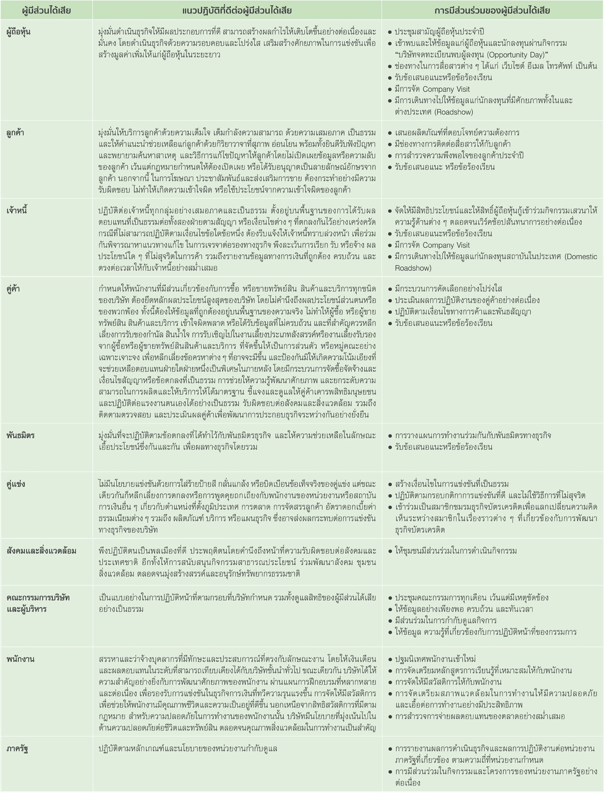
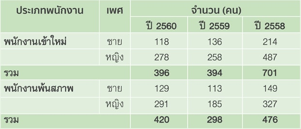
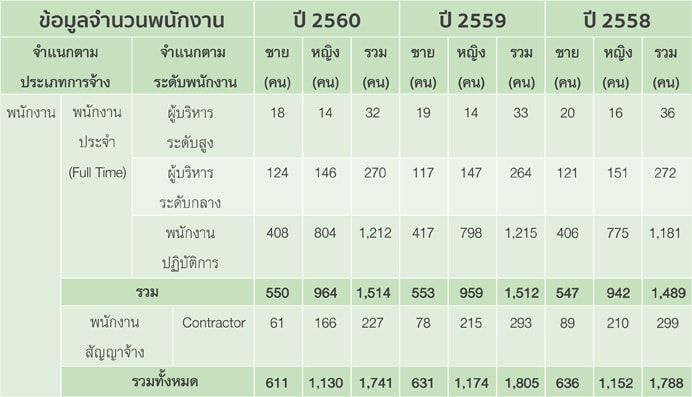
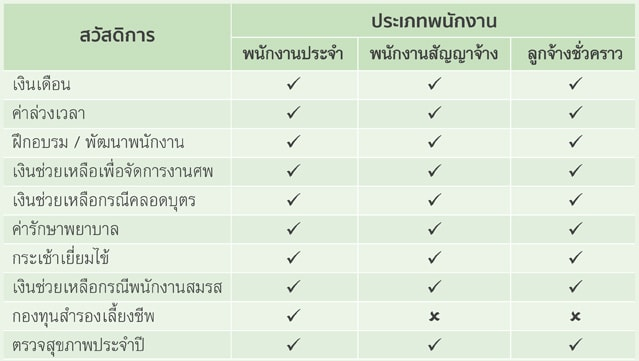
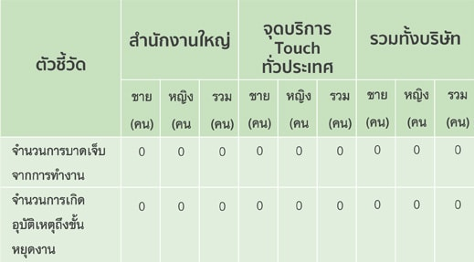
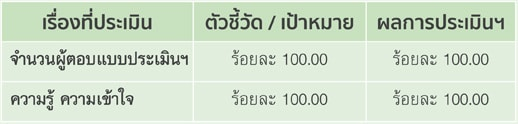
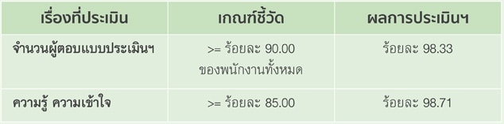
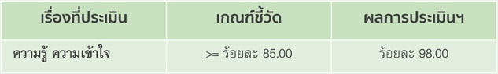
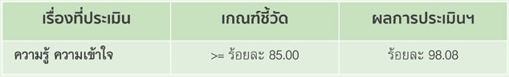

1. นโยบายภาพรวม
ด้วยความเชื่อมั่นว่า ถ้าสังคมดี เคทีซีย่อมดีไปด้วย บริษัทจึงมุ่งหมายให้ธุรกิจเติบโตคู่ไปกับการร่วมรับผิดชอบต่อสังคมอย่างยั่งยืน โดยคำนึงถึงการสร้างประโยชน์สูงสุดให้กับผู้มีส่วนได้เสียกับองค์กรในทุกมิติรอบด้าน ทั้งสมาชิก พันธมิตรทางธุรกิจ พนักงาน ผู้ถือหุ้น สังคม และสิ่งแวดล้อม
ในเชิงธุรกิจ บริษัทมีนโยบายในการทำธุรกิจที่คำนึงถึงการรับผิดชอบต่อผู้มีส่วนได้เสียที่เกี่ยวข้องตลอดกระบวนการดำเนินงาน โดยใช้การบริหารแบบ Membership Company ซึ่งมีสมาชิกเป็นศูนย์กลางสำคัญ เน้นการนำเสนอนวัตกรรมใหม่ ๆ ทั้งในด้านผลิตภัณฑ์และบริการที่มีเอกลักษณ์เฉพาะ รวมถึงการคัดสรรข้อเสนอและสิทธิประโยชน์ที่ดีรอบด้านอย่างต่อเนื่องให้กับ “ผู้มีส่วนได้เสีย” ซึ่งเปรียบเหมือน “สมาชิก” อย่างสมบูรณ์ รวมทั้งสนับสนุนให้สมาชิกบัตรเครดิตและสินเชื่อบุคคลมีการวางแผนใช้จ่ายอย่างมีเหตุผล เพื่อไม่ให้เกิดภาระหนี้เกินความจำเป็น
ภายในองค์กร บริษัทเชื่อว่าผลิตภัณฑ์และบริการที่นำเสนอสู่สาธารณชน จะดีเลิศได้ต้องมาจากความคิดสร้างสรรค์ที่ดี และความร่วมมือร่วมใจจากภายในองค์กรเป็นอันดับแรก รวมทั้งปลูกจิตสำนึกความรับผิดชอบต่อสังคมให้เกิดขึ้นกับพนักงานทุกระดับอย่างจริงจังและต่อเนื่อง บริษัทจึงมุ่งปลูกฝังและมอบโอกาสให้พนักงานได้พัฒนาศักยภาพของตนเองอย่างเต็มกำลัง รวมทั้งการสร้างวัฒนธรรมองค์กรให้เป็นหนึ่งเดียวกัน โดยมุ่งสร้างสภาพแวดล้อม บรรยากาศที่ดีและอุปกรณ์อันทันสมัยที่เอื้อต่อการทำงานในรูปแบบของสมาร์ทออฟฟิศ เพื่อให้เกิดความคิดริเริ่มสร้างสรรค์ใหม่ ๆ และการจัดกิจกรรมเพื่อส่งเสริมให้พนักงานมีมิตรภาพที่ดีและอยู่ร่วมกันด้วยความเป็นน้ำหนึ่งใจเดียวกัน อีกทั้งส่งเสริมให้เกิดการสร้างสมดุลในการทำงานและชีวิตส่วนตัวของพนักงาน สมกับที่เป็นองค์กรแห่งความสุขและเป็นองค์กรช่างคิด (Best Place to Work and Creative Organization)
นอกจากนี้ ในฐานะที่บริษัทเป็นสถาบันการเงินซึ่งให้บริการธุรกิจบัตรเครดิตและสินเชื่อบุคคล และนับเป็นฟันเฟืองหนึ่งในกลไกทางเศรษฐกิจของประเทศ บริษัทจึงมุ่งพัฒนาสังคมจากสิ่งที่ใกล้ตัว ด้วยการสร้างองค์กรเพื่อการเรียนรู้ โดยเริ่มจากภายในองค์กรและส่งต่อสู่สังคมภายนอก รวมถึงการมุ่งสนับสนุนพัฒนาศักยภาพเยาวชนไทยและการศึกษาผ่านโครงการ Learn & Earn เป็นหลัก เพื่อร่วมสร้างบุคลากรที่มีคุณภาพให้กับสังคมไทย และยังสามารถเติบโตและสร้างรายได้ด้วยตนเองอย่างยั่งยืน นอกจากนี้ บริษัทยังมีนโยบายชัดเจนที่จะดำเนินธุรกิจโดยหลีกเลี่ยงการสร้างผลกระทบในเชิงลบต่อทรัพยากรธรรมชาติ สิ่งแวดล้อมและสังคม
2. การดำเนินงานและการจัดทำรายงานด้าน CSR
มาตรฐานที่บริษัทได้นำมาใช้ในการพัฒนาแนวทางปฏิบัติและการเขียนรายงานการแสดงความรับผิดชอบต่อสังคม ได้แก่ การนำกรอบการรายงานสากลที่พัฒนาโดย GRI หรือ Global Reporting Initiative มาปรับใช้ในการจัดทำรายงานความรับผิดชอบต่อสังคม ควบคู่กับการยึดถือรูปแบบการรายงานตามแนวทางความรับผิดชอบต่อสังคมของกิจการของตลาดหลักทรัพย์แห่งประเทศไทย ซึ่งเป็นที่ยอมรับอย่างกว้างขวางในองค์กรและผู้ที่ปฏิบัติงานด้านการแสดงความรับผิดชอบต่อสังคม โดยการปฏิบัติตามแนวทางของตลาดหลักทรัพย์แห่งประเทศไทย ดังกล่าว ถือเป็นจุดเริ่มต้นที่ดีในการพัฒนารายงานและเตรียมความพร้อมสู่การจัดทำรายงานแห่งความยั่งยืนในอนาคต เนื่องจากครอบคลุมทุกประเด็นที่ต้องรายงานในหนังสือรายงานแห่งความยั่งยืน ทั้งในระดับประเทศและสากล
ในการดำเนินกิจการ บริษัทมีการนำเสนอผลิตภัณฑ์และบริการรูปแบบใหม่ ๆ ที่มีประสิทธิภาพและครอบคลุมทุกความต้องการของลูกค้าแบบเจาะลึก บนแนวทางการทำตลาดในลักษณะของไลฟ์สไตล์เซกเมนต์เทชั่นที่สร้างความแตกต่างจากคู่แข่งขันในตลาดและนำเสนอสิทธิประโยชน์รอบด้านอย่างต่อเนื่องให้กับลูกค้า เพื่อให้บริษัทสามารถตอบสนองความต้องการของสมาชิกได้อย่างถูกต้องในเวลาที่เหมาะสม เน้นการผนึกความร่วมมือกับหลากพันธมิตรที่มีความเชี่ยวชาญ รวมถึงนำนวัตกรรมเทคโนโลยีบริการมาสนับสนุนการดำเนินธุรกิจ ขยายฐานสมาชิกโดยมุ่งเน้นคุณภาพมากกว่าปริมาณผ่านช่องทางออนไลน์ต่างๆ ของบริษัทและพันธมิตรธุรกิจ ตลอดจนปรับปรุงบริการให้สมาชิกสามารถกำหนดและทำรายการได้ด้วยตนเอง (Self Service) เพื่อให้สอดรับกับไลฟ์สไตล์ของคนในยุคดิจิทัล นอกจากนี้ จะขยายปริมาณร้านค้ารับบัตรเครดิตสู่ธุรกิจใหม่และตลาดต่างจังหวัด ด้วยบริการ KTC Payment Solutions ที่เหมาะกับประเภทของคู่ค้า เช่น KTC QR Code Payment, Alipay O2O (Online to Offline) เป็นต้น ด้วยจุดมุ่งหมายเพื่อให้สมาชิกรอบด้านเกิดความพึงพอใจและผูกพันกับแบรนด์เคทีซี อันจะนำไปสู่การเติบโตของบริษัทฯ อย่างยั่งยืนในระยะยาว
อีกทั้งยังมีหน่วยงานที่ทำหน้าที่ติดตามสถานะการใช้จ่ายของสมาชิกตลอด 24 ชั่วโมง เพื่อให้ความช่วยเหลือในกรณีที่หากมีผู้ไม่ประสงค์ดีนำบัตรเครดิตของสมาชิกไปใช้ประโยชน์ในทางมิชอบ เหล่านี้ล้วนเป็นปัจจัยสนับสนุนให้เคทีซีบรรลุเป้าหมายการเป็นผู้นำตลาดสินเชื่อเพื่อผู้บริโภคอย่างครบวงจร โดยมีคณะกรรมการและคณะทำงานตรวจสอบจากผู้บริหารระดับสูงของหน่วยงานที่เกี่ยวข้อง คอยควบคุมคุณภาพและประเมินสถานการณ์งานอย่างใกล้ชิด
การมีส่วนร่วมของผู้มีส่วนได้เสียเป็นสิ่งที่บริษัทให้ความสำคัญโดยระบุแนวทางปฏิบัติต่อผู้มีส่วนได้เสียไว้เป็นลายลักษณ์อักษรที่ชัดเจนไว้ในในนโยบายกำกับดูแลกิจการและคู่มือจรรยาบรรณธุรกิจของบริษัท โดยแบ่งกลุ่มผู้มีส่วนได้เสียออกเป็น 10 กลุ่ม ได้แก่ ผู้ถือหุ้น ลูกค้า เจ้าหนี้ คู่ค้า พันธมิตร คู่แข่ง สังคมและสิ่งแวดล้อม คณะกรรมการบริษัท และผู้บริหาร พนักงาน รวมถึงภาครัฐ ตามความเกี่ยวข้องในกระบวนการดำเนินธุรกิจของบริษัท โดยได้กำหนดแนวทางการมีส่วนร่วมที่เหมาะสมต่อความต้องการ เพื่อรับทราบและเข้าถึงความคาดหวัง เพื่อนำมาใช้ในการกำหนดแนวปฏิบัติที่เหมาะสม ดังนี้

บริษัทได้ให้ความสำคัญกับการดำเนินกิจการภายใต้หลักการกำกับดูแลกิจการที่ดี โดยมีรายละเอียดของการดำเนินการ ดังนี้
- การประกอบกิจการด้วยความเป็นธรรม
• บริษัทประกอบธุรกิจบัตรเครดิตและสินเชื่อบุคคลภายใต้การกำกับตามประกาศของธนาคารแห่งประเทศไทย(ธปท.) เช่น การกำหนดคุณสมบัติผู้ถือบัตรเครดิตทั้งบัตรหลัก บัตรเสริม และสินเชื่อบุคคล ตลอดจนการอนุมัติวงเงิน การกำหนดอัตราดอกเบี้ยและค่าธรรมเนียมต่าง ๆ เป็นต้น และยังมีการผลักดันให้หน่วยงานภายในบริษัท ปฏิบัติตามกฎหมายและระเบียบปฏิบัติของธนาคารแห่งประเทศไทยและของแต่ละเครือข่ายผู้ให้บริการบัตรเครดิต
• บริษัทยึดหลักการปฏิบัติต่อลูกค้าให้เป็นไปตามประกาศที่หน่วยงานราชการหรือกฎหมายกำหนด (ธนาคารแห่งประเทศไทย สำนักงานคณะกรรมการคุ้มครองผู้บริโภค พรบ.คุ้มครองข้อมูลเครดิต) เช่น การไม่อนุมัติบัตรเครดิตหรือสินเชื่อบุคคลให้กับผู้ที่ยังไม่บรรลุนิติภาวะ การจัดให้มีสัญญา ข้อตกลงและเงื่อนไขการใช้บัตรเครดิตและสินเชื่อบุคคลที่ชัดเจนและเป็นธรรม การแจ้งให้ลูกค้าทราบหากมีการเปลี่ยนแปลงในเงื่อนไขของสัญญาที่กระทบต่อสิทธิของลูกค้า รวมถึงปฏิบัติในเรื่องของการแจ้งนำส่งข้อมูลเครดิตของเจ้าของข้อมูล เป็นไปตามหลักเกณฑ์ที่ทางการกำหนด
• กำหนดนโยบายการกำกับดูแลกิจการ และคู่มือจรรยาบรรณธุรกิจ เพื่อให้กรรมการ ผู้บริหาร และพนักงานใช้เป็นคู่มือเพื่อยึดถือเป็นแนวทางในการปฏิบัติหน้าที่ด้วยความเป็นธรรม มีความรับผิดชอบต่อผู้มีส่วนได้เสียทุกกลุ่ม
• ในการว่าจ้างคู่ค้า หรือบุคคลภายนอกเพื่อดำเนินธุรกิจแทนบริษัทในงานที่ไม่ใช่ธุรกิจหลักของบริษัท หรือไม่ใช่ธุรกิจที่บริษัทมีความชำนาญ บริษัทมีการดำเนินการ ดังนี้
- บริษัทคำนึงถึงความสำคัญของการใช้บริการจากบุคคลภายนอก โดยได้จัดให้มีระเบียบการจัดซื้อจัดจ้าง เพื่อกำหนดหลักเกณฑ์และคุณสมบัติของบริษัทผู้ให้บริการ ตลอดจนการจัดทำสัญญาที่เป็นธรรม และมีการตรวจรับ มอบสินค้าเพื่อให้ตรงตามสัญญาการใช้บริการ ทั้งนี้ เพื่อให้เกิดความโปร่งใสในการจัดซื้อจัดจ้าง ตลอดจนการจัดให้มีกระบวนการจัดซื้อจัดจ้างที่ชัดเจน และต้องไม่เข้าไปกระทำการที่ขัดกับนโยบายต่อต้านการคอร์รัปชัน นอกจากนี้ ยังได้จัดให้มีนโยบายการใช้บริการจากบุคคลภายนอก ซึ่งนโยบายดังกล่าวสอดคล้องกับนโยบายการกำกับแบบรวมกลุ่มของธนาคารกรุงไทย เพื่อกำหนดหลักเกณฑ์การคัดเลือกผู้ให้บริการ หลักเกณฑ์การใช้บริการ บทบาทหน้าที่ความรับผิดชอบของผู้ให้บริการ รวมถึงการติดตามดูแลโดยทุกหน่วยงานในบริษัทที่ประสงค์ว่าจ้างบุคคลภายนอกจะต้องปฏิบัติตามนโยบาย หรือระเบียบที่กล่าวข้างต้น
- การติดตามกระบวนการควบคุมคุณภาพผู้ให้บริการภายนอกของหน่วยงานด้านปฏิบัติการ นอกจากมีจุดประสงค์เพื่อควบคุมมาตรฐานการให้บริการของผู้ให้บริการภายนอกแล้วยังเป็นการดำเนินงานเพื่อเชื่อมต่อความต้องการของบริษัทคู่ค้า (ผู้ให้บริการภายนอก) และลูกค้า เพื่อให้เกิดการปรับปรุงในกระบวนการทำงานและผลิตภัณฑ์บริการที่ส่งมอบในด้านต่าง ๆ อย่างต่อเนื่องและยั่งยืน ดังนั้น จึงมีการปรับปรุงกระบวนการทำงานอยู่ตลอดเวลา รวมถึงความพยายามในการลดการใช้ทรัพยากรที่ฟุ่มเฟือยในกระบวนการหรือในผลิตภัณฑ์บริการที่ส่งมอบ ผลที่ได้รับนอกจากการลดความฟุ่มเฟือย เพื่อช่วยลดภาระกับสิ่งแวดล้อมแล้ว ยังทำให้ต้นทุนในการดำเนินกิจการลดลงอีกด้วย ตัวอย่างผลการดำเนินการที่ผ่านมา เช่น การลดวัสดุสิ่งพิมพ์สำหรับลูกค้าบางกลุ่ม เป็นต้น โดยการติดตามกระบวนการควบคุมคุณภาพนี้ยังเป็นการเพิ่มช่องทางเพื่อให้คู่ค้าเสนอแนะและร่วมพัฒนากระบวนการทำงานที่ดีและเป็นธรรมด้วยการแบ่งปันประสบการณ์ระหว่างบริษัทกับคู่ค้าร่วมกันผ่านการประชุมร่วมระหว่างบริษัทที่จัดเป็นประจำอีกด้วย
- เคทีซีได้ร่วมกับบริษัทรับจ้างภายนอก (Outsource) ในการกำหนดหลักสูตรการฝึกอบรม เพื่อพัฒนาทักษะการทำงานของพนักงานของบริษัทรับจ้างภายนอกเป็นประจำทุกปี เช่น พนักงานติดตามหนี้ พนักงานธุรการ พนักงานช่าง เป็นต้น
- ความรับผิดชอบต่อคู่ค้า หรือผู้ให้บริการภายนอกในห่วงโซ่อุปทาน (Supply chain)
บริษัทเล็งเห็นความสำคัญของปัญหาสังคมและสิ่งแวดล้อม โดยในการดำเนินธุรกิจนั้นได้มุ่งเน้นการพัฒนาอย่างยั่งยืนตลอดทั้งห่วงโซ่อุปทาน (Supply chain) โดยเริ่มจากการประกอบธุรกิจด้วยความซื่อสัตย์ สุจริต โปร่งใส และตรวจสอบได้ในทุกกระบวนการ ผ่านกระบวนการจัดซื้อจัดจ้าง หรือการว่าจ้างการใช้บริการจากบุคคลภายนอก ดังนี้
- งานการว่าจ้างบุคลากรจากภายนอก เช่น งานการจัดทำสื่อประชาสัมพันธ์ งานจ้างทำความสะอาด งานบริการรับ-ส่งเอกสาร เป็นต้น
- งานด้านการจัดพิมพ์ จัดซื้ออุปกรณ์สำนักงาน หรือสินค้าทั่วไป เช่น การผลิตบัตรพลาสติก สินค้าหรือบริการทั่วไป เครื่องเขียน อุปกรณ์สำนักงานต่าง ๆ เป็นต้น
- งานจัดซื้อด้านเทคโนโลยีสารสนเทศ เช่น อุปกรณ์ด้านเทคโนโลยีสารสนเทศต่าง ๆ (เครื่องรูดบัตร เครื่องคอมพิวเตอร์ เครื่องถ่ายเอกสาร เป็นต้น) รวมถึง การจัดหาหรือบำรุงรักษาอุปกรณ์ต่าง ๆ
- งานด้านอาคาร และสถานที่ เช่น การตกแต่ง ปรับปรุงอาคาร สำนักงาน เป็นต้น
จากขอบเขตของงานดังกล่าว จึงเห็นได้ว่าคู่ค้าของบริษัทมีความสำคัญเป็นอย่างมาก ดังนั้น บริษัทจึงให้ ความสำคัญในการจัดหาคู่ค้า โดยจะต้องปฏิบัติตามกฎหมาย หรือภายใต้ข้อกำหนดของสัญญาระหว่างกัน โดยได้กำหนดเป็นแนวปฏิบัติสำหรับให้หน่วยงานของบริษัทที่รับผิดชอบงานด้านการจัดซื้อจัดจ้างใช้ในการคัดเลือกคู่ค้าทุกราย นอกจากการปฏิบัติตามขอบเขตดังกล่าวแล้ว บริษัทได้กำหนดไว้เป็นข้อกำหนดในสัญญาการให้บริการระหว่างบริษัท กับพันธมิตร หรือตัวแทนทางธุรกิจ โดยจะต้องดำเนินธุรกิจด้วยความซื่อสัตย์สุจริต โปร่งใส และสามารถตรวจสอบได้ตามหลักการกำกับดูแลกิจการที่ดี และถือปฏิบัติตามกฎหมายที่เกี่ยวข้องกับการต่อต้านการให้สินบนและการทุจริตคอร์รัปชัน
• การดำเนินการหากมีข้อร้องเรียน โดยบริษัทได้จัดตั้งศูนย์รับเรื่องร้องเรียน ชมเชย และแนะนำการให้บริการ (Customer Feedback) จากหลายช่องทาง ทั้งช่องทางโทรศัพท์ที่ติดต่อเข้ามายัง KTC Contact Center (02-123-5000) โดยตรง ช่องทางผ่านหน่วยงานกำกับดูแล และช่องทางโซเชียลมีเดียต่าง ๆ เพื่อนำข้อร้องเรียน ติชม ข้อเสนอแนะต่าง ๆ มาปรับปรุงการให้บริการ ทั้งนี้ เพื่อประโยชน์ในการคุ้มครองผู้ใช้บริการผลิตภัณฑ์และบริการ โดยเรื่องร้องเรียนที่เคทีซีได้รับนั้นจะได้รับการตรวจสอบและแจ้งความคืบหน้า รวมทั้งชี้แจงขั้นตอนต่อไปให้ทราบ รวมถึงได้รับการดำเนินการแก้ไขข้อร้องเรียนนั้นให้แล้วเสร็จและแจ้งให้ทราบโดยเร็ว จากนั้นเคทีซีจะนำข้อมูลทีได้รับมาใช้ปรับปรุงคุณภาพผลิตภัณฑ์และการให้บริการเพื่อสร้างความพึงพอใจให้แก่ลูกค้าผู้มีส่วนได้เสียต่อไป
• บริษัทได้จัดตั้งหน่วยงาน Internal Audit ซึ่งเป็นหน่วยงานอิสระที่รายงานตรงต่อคณะกรรมการตรวจสอบ เพื่อทำหน้าที่ประเมินความเพียงพอ และความมีประสิทธิภาพของระบบควบคุมภายใน การบริหารความเสี่ยง และการกำกับดูแลกิจการของบริษัท โดยมีการรายงานผลการตรวจสอบระบบควบคุมภายในที่บกพร่อง และความเห็นที่สร้างมูลค่าเพิ่มให้การปฏิบัติงานถูกต้อง มีระบบการควบคุมภายในที่ดี ลดค่าใช้จ่าย และลดความเสี่ยงของบริษัทต่อคณะผู้บริหาร และคณะกรรมการตรวจสอบอย่างต่อเนื่องสม่ำเสมอ ส่งเสริมให้การตรวจสอบที่มีประสิทธิผลทำให้เป็นรากฐานสำคัญของการเติบโตอย่างยั่งยืน
• บริษัทได้จัดตั้งหน่วยงาน Compliance เพื่อทำหน้าที่ในการให้คำปรึกษา รวมถึงสอบทานการปฏิบัติงานในกระบวนการที่สำคัญเพื่อให้บริษัทมีการปฏิบัติสอดคล้องกับกฎระเบียบข้อบังคับของหน่วยงานทางการ เช่น ธนาคารแห่งประเทศไทย สำนักงาน ก.ล.ต. สำนักงาน ปปง. บริษัทข้อมูลเครดิตแห่งชาติ เป็นต้น รวมทั้ง ติดตาม วิเคราะห์ผลกระทบ ของกฎหมายหรือประกาศที่เกี่ยวข้องกับบริษัท โดยอาจสรุปเพื่อเผยแพร่สาระสำคัญ หรือจัดประชุมเพื่อซักซ้อมความเข้าใจกับหน่วยงานต่าง ๆ ภายในบริษัทที่เกี่ยวข้อง
- การต่อต้านการทุจริตคอร์รัปชัน
สามารถพิจารณาข้อมูลที่ได้ดำเนินการในส่วนที่เกี่ยวข้องกับการต่อต้านการคอร์รัปชันได้ในส่วนของความรับผิดชอบต่อสังคม ในหัวข้อ “5 การป้องกันการมีส่วนได้เสียเกี่ยวข้องกับการคอร์รัปชัน”
- การเคารพสิทธิมนุษยชน
• บริษัทมีการปฏิบัติเป็นไปตามระเบียบข้อบังคับในการปฏิบัติงานติดตามทวงถามหนี้ตามพระราชบัญญัติการทวงถามหนี้ พ.ศ. 2558 ประกาศธนาคารแห่งประเทศไทย และกฎหมายอื่น ๆ โดยมีการจัดอบรมให้กับพนักงานทวงถามหนี้ (New Collector Training Program) โดยให้ความรู้และเพิ่มทักษะความชำนาญเพื่อให้มีการปฏิบัติงานในการทวงถามหนี้เป็นไปตามที่กฎหมายกำหนด โดยใช้วาจาสุภาพ ไม่มีการข่มขู่ ดูถูก หรือเสียดสีลูกค้า และไม่เปิดเผยข้อมูลของลูกค้าให้กับบุคคลที่สาม
• เพื่อให้มีการปฏิบัติสอดคล้องกับกฎหมายแรงงาน ในการรับสมัครพนักงานเข้าทำงาน บริษัทได้มีการกำหนดคุณสมบัติของพนักงานโดยจะคำนึงถึงอายุ ความรู้ ความสามารถ ทักษะ ประสิทธิภาพการทำงานของผู้สมัครเป็นสำคัญ โดยไม่กีดกันหรือแบ่งแยกความหลากหลายทางเพศ ศาสนา ความเชื่อทางการเมือง หรือแม้แต่บุคคลที่มีความบกพร่องทางร่างกาย หากไม่ได้ป่วยเป็นโรคติดต่อร้ายแรง และสามารถแสดงศักยภาพที่เหมาะสมกับการทำงานให้ปรากฎชัด ก็สามารถเข้าทำงานกับบริษัทได้ รวมทั้งไม่มีการเลือกปฏิบัติต่อพนักงาน อันเนื่องมาจากการนับถือศาสนา เพศ หรือการศึกษา
จำนวนพนักงานเข้าใหม่และพนักงานที่พ้นสภาพ เพื่อให้การบริหารจัดการอัตรากำลังของบริษัทมีประสิทธิภาพ และเกิดประโยชน์สูงสุด ในการสรรหาพนักงานในอัตราว่างที่มีอยู่เดิม จะพิจารณาสรรหาจากภายในบริษัทก่อนเป็นหลัก หรือหากเป็นงานใหม่ที่ต้องการบุคลากรที่มีทักษะเฉพาะด้านและไม่สามารถจัดสรรได้จากภายในบริษัทแล้ว จึงค่อยพิจารณาสรรหาบุคลากรจากภายนอกเพิ่มเติม ทั้งนี้ การรับพนักงานใหม่จะพิจารณารับเพิ่มตามความจำเป็นของธุรกิจ โดยพิจารณาคุณสมบัติ ความสามารถ ประสบการณ์ รวมถึงกำหนดอัตราค่าตอบแทนที่สอดคล้องกับอุตสาหกรรม

หมายเหตุ : จำนวนการลาออก ไม่นับรวมพนักงานเกษียณอายุ เกษียณอายุก่อนกำหนด ถึงแก่กรรม ไม่ผ่านเกณฑ์การบรรจุ สิ้นสุดสัญญาจ้างงาน หรือเลิกจ้าง
- การปฏิบัติต่อแรงงานอย่างเป็นธรรม
• กำหนดคู่มือมาตรฐานการปฏิบัติงาน (SOP) ตั้งแต่กระบวนการสรรหาและคัดเลือกบุคลากรใหม่ การประเมินผลการปฏิบัติงาน - การปรับขึ้นเงินเดือนประจำปี (Salary Increase) และเงินรางวัลพิเศษประจำปี (Performance Incentive) การเลื่อนตำแหน่งประจำปี (Promotion) ทั้งนี้ เพื่อให้เกิดมาตรฐานในการดำเนินงานของบริษัทในการดำเนินงานด้านทรัพยากรบุคคล
ในปี 2560 บริษัทมีจำนวนพนักงาน จำนวนทั้งสิ้น 1,741 คน สามารถแบ่งตามเพศ ประเภทการจ้าง และระดับ พนักงาน ดังนี้

• บริษัทได้มีการว่าจ้างพนักงานที่บกพร่องทางร่างกายเข้ามาปฏิบัติงานในสังกัดหน่วยงานไอที เพื่อให้ได้รับโอกาสและผลตอบแทนเทียบเท่ากับพนักงานซึ่งเป็นคนปกติ ตามพระราชบัญญัติส่งเสริมและพัฒนาคุณภาพชีวิตคนพิการ พ.ศ. 2550 ที่มีเจตนาเพื่อคุ้มครองให้คนพิการมีงานทำหรือประกอบอาชีพ โดยมิให้มีการเลือกปฏิบัติโดยมิได้เป็นธรรมเนื่องจากสาเหตุทางกายและสุขภาพ ซึ่งมีบัญญัติให้หน่วยงานของรัฐ และนายจ้างหรือเจ้าของสถานประกอบการ ต้องรับคนพิการเข้าทำงานตามมาตรา 33 หรือส่งเงินเข้ากองทุนส่งเสริมและพัฒนาคุณภาพชีวิตคนพิการตามมาตรา 34 หรือเลือกดำเนินการให้สัมปทานตามมาตรา 35 นอกจากนี้ บริษัทมีการดูแลพนักงานประสบปัญหาด้านสุขภาพ โดยปรับเปลี่ยนหน้าที่ความรับผิดชอบตามศักยภาพและความสามารถในการปฏิบัติงาน เพื่อให้เกิดผลกระทบกับสุขภาพของพนักงานน้อยที่สุด
• การดูแลสุขภาพของพนักงาน บริษัทมีความห่วงใยสุขภาพของพนักงาน โดยได้จัดให้มีสวัสดิการต่าง ๆ ให้กับพนักงาน หรือครอบครัวของพนักงาน ดังนี้
- จัดให้มีการตรวจสุขภาพประจำปีให้แก่พนักงาน ณ โรงพยาบาลชั้นนำ เพื่อให้พนักงานเกิดความใส่ใจในการดูแลสุขภาพของตนเอง และลดอาการเสี่ยง รวมถึงป้องกันการเกิดโรคภัยไข้เจ็บต่าง ๆ
- จัดให้มีห้องพยาบาล พยาบาล บริการด้านการแพทย์ รวมถึง จัดให้มียาและเวชภัณฑ์ในการปฐมพยาลเบื้องต้นให้กับพนักงานตามมาตรฐานที่เหมาะสม โดยพนักงานสามารถเข้ารับบริการได้ทุกวันในเวลาทำการ
- จัดให้มีการฉีดวัคซีนป้องกันโรคต่าง ๆ ให้กับพนักงาน เช่น วัคซีนป้องกันโรคไข้หวัดใหญ่ เป็นต้น
- จัดบรรยายโดยคุณหมอจากโรงพยาบาลชั้นนำเพื่อให้ความรู้ข้อมูลด้านสุขภาพกับพนักงานเป็นการป้องกันและส่งเสริมด้านสุขภาพให้สามารถทำงานควบคู่กับการมีสุขภาพที่แข็งแรง เช่น โภชนาการดีมีชัย ห่างไกลโรค, ออฟฟิศซินโดรม เป็นต้น
- บริษัทมีการจัดสวัสดิการค่ารักษาพยาบาลให้กับพนักงานและครอบคลุมไปถึงครอบครัวของพนักงานด้วย ซึ่งกำหนดเป็นภาคสมัครใจ โดยบริษัทจะจ่ายค่าเบี้ยประกันสุขภาพของครอบครัวพนักงานให้จำนวน 50%
• การจัดสวัสดิการให้กับพนักงาน พนักงานสัญญาจ้าง ดังนี้

• การสำรวจความคิดเห็นของพนักงานที่มีต่อองค์กร (Employee Survey) บริษัทให้ความสำคัญต่อการดูแลและพัฒนาบุคลากร เพื่อส่งเสริมให้พนักงานเกิดความผูกพันต่อองค์กรอย่างต่อเนื่องและยั่งยืน เนื่องจากบริษัทตระหนักเป็นอย่างยิ่งว่าองค์กรจะเติบโตและสามารถแข่งขันได้นั้นจะต้องมีรากฐานที่ดีจากพนักงานของเราทุกคน ดังนั้น จึงได้จัดให้มีการสำรวจความคิดเห็นของพนักงาน โดยการรับฟังความคิดเห็นและข้อเสนอแนะของพนักงานที่มีต่อปัจจัยแวดล้อมต่าง ๆ เช่น ผู้บังคับบัญชา เป็นต้น โดยข้อมูลทั้งหมดจะถูกจัดเก็บไว้เป็นความลับ พนักงานสามารถมั่นใจได้ว่าความคิดเห็นดังกล่าวจะไม่ส่งผลกระทบต่อการประเมินผลการปฏิบัติงาน ผลการสำรวจในปี 2560 โดยหน่วยงานภายอิสระภายนอก มีค่าเท่ากับ 68% ซึ่งสูงกว่าค่าเฉลี่ยของบริษัทที่เข้าร่วมโครงการ ทั้งนี้ ความเห็นของพนักงานรู้สึกว่าตนเองเป็นส่วนหนึ่งของบริษัท ต้องการสร้างสรรค์ผลงานที่ดีให้กับบริษัท และพร้อมจะเป็นส่วนหนึ่งที่จะร่วมพัฒนาบริษัทให้ดีขึ้นอยู่เสมอ
• ในการใช้บริการว่าจ้างหน่วยงานภายนอก (Outsource) ให้ปฏิบัติงานในนามของบริษัท บริษัทมีการกำหนดไว้ในสัญญาการใช้บริการของบริษัทผู้รับว่าจ้างให้มีการปฏิบัติต่อพนักงานในสังกัดอย่างเป็นธรรมทุกกรณี ตามที่กฎหมายแรงงานกำหนด นอกจากนี้ บริษัทยังมีการดูแล ให้คำปรึกษา และประสานงานระหว่างพนักงานผู้ปฏิบัติงานของบริษัท Outsource กับบริษัท Outsource ในกรณีที่พนักงานผู้ปฏิบัติงานเกิดข้อสงสัย
• การดูแลความปลอดภัย อาชีวอนามัย และสภาพแวดล้อมในการทำงาน
- บริษัทมีการกำหนดและปฏิบัติตามแนวปฏิบัติด้านความปลอดภัย อาชีวอนามัย และสภาพแวดล้อมในการทำงานที่เหมาะสม สอดคล้องกับมาตรฐานและกฎหมายที่เกี่ยวข้อง
- มีการจัดอบรมหลักสูตรด้านความปลอดภัย อาชีวอนามัย และความปลอดภัยในที่ทำงานให้กับพนักงานอย่างต่อเนื่อง
- ติดตาม เฝ้าระวัง และจัดให้มีการปรับปรุงสภาพแวดล้อมในพื้นที่ทำงานอย่างสม่ำเสมอ
- ติดตาม ประเมินผลด้านความสะอาดของพื้นที่ทำงานในแต่ละหน่วยงานอย่างสม่ำเสมอ
- ติดตามผล และบันทึกข้อมูลเกี่ยวกับการเจ็บป่วย บาดเจ็บ ตลอดจนให้การดูแลพนักงานที่บาดเจ็บให้ได้รับการรักษาจนสามารถใช้ชีวิตเป็นปกติในการทำงาน
จำนวนและอัตราการประสบอันตราย หรือเจ็บป่วยจากการทำงานของพนักงาน ปี 2560

หมายเหตุ : พนักงาน คือ พนักงานประจำ, พนักงานสัญญาจ้าง และลูกจ้างชั่วคราว
• บริษัทมีนโยบายพัฒนาบุคลากรอย่างต่อเนื่อง โดยให้ความสำคัญในการสร้างบุคลากรให้มีความรู้ ทักษะความสามารถและพัฒนาศักยภาพของพนักงานให้มีคุณภาพในทุกระดับ ตามทิศทางของธุรกิจ เพื่อเพิ่มขีดความสามารถในการแข่งขันให้แก่องค์กรทั้งในปัจจุบันและอนาคต โดยมุ่งเสริมสร้างให้พนักงานมีทัศนคติที่ดี มีทักษะเชี่ยวชาญในการปฏิบัติงาน เพื่อให้บริการที่ดีแก่ลูกค้าอย่างมีประสิทธิภาพ ถูกต้อง รวดเร็วและลูกค้ามีความพึงพอใจ โดยในปี 2560 บริษัทจัดหลักสูตรอบรมเพื่อพัฒนาบุคลากรมากกว่า 184 หลักสูตร โดยมีรายละเอียดพอสังเขป ดังนี้
- หลักสูตรปฐมนิเทศ มีการจัดอบรมให้กับพนักงานใหม่ตั้งแต่แรกเข้างาน เพื่อให้พนักงานมีความรู้ ความเข้าใจในการดำเนินธุรกิจ รวมถึงผลิตภัณฑ์ต่าง ๆ ของบริษัท ปลูกฝังค่านิยมองค์กร (Core Value) คุณธรรม จริยธรรม ซึ่งเป็นสิ่งสำคัญต่อความสำเร็จ ความยั่งยืนของธรรมาภิบาล ความรับผิดชอบต่อสังคมและสิ่งแวดล้อม รวมทั้งการต่อต้านคอร์รัปชัน เสริมสร้างศักยภาพของพนักงานให้สามารถรับผิดชอบต่อหน้าที่ในปัจจุบันและพร้อมที่จะเติบโตในอนาคต ร่วมกันขับเคลื่อนองค์กรให้ไปสู่เป้าหมายที่วางไว้ เพื่อให้เกิดเป็นวัฒนธรรมองค์กรมี Core Values ซึ่งเสมือนรากแก้วขององค์กร หล่อหลอมให้พนักงานตระหนักและเข้าใจในแก่นของกระบวนการความคิดและการทำงานร่วมกัน เพื่อให้พนักงานตระหนักรู้ในทุกกระบวนการคิดและการทำงาน เพื่อให้สอดประสานความร่วมมือไปในทิศทางเดียวกัน โดยมีจำนวนพนักงานที่เข้าร่วมอบรมทั้งสิ้น 445 คน โดยภายหลังจากการอบรมปฐมนิเทศ บริษัทได้จัดให้พนักงานทำแบบทดสอบเพื่อประเมินความรู้ ความเข้าใจในเนื้อหาที่ได้อบรม ซึ่งพนักงานจะต้องผ่านการทดสอบไม่ต่ำกว่า 85%
นอกจากหลักสูตรที่มุ่งเน้นให้เกิดการพัฒนาทักษะ ความรู้ในด้านต่าง ๆ แล้ว บริษัทได้ส่งเสริมให้เป็นองค์กรแห่งการเรียนรู้ (Learning Organization) เพื่อสร้างสภาพแวดล้อม บรรยากาศที่ดีในการทำงาน ส่งเสริมความคิดสร้างสรรค์ อันจะก่อให้เกิดนวัตกรรมใหม่ๆ เพื่อปรับปรุงกระบวนการทำงานให้มีประสิทธิภาพและประสิทธิผล สนับสนุนการสร้างองค์ความรู้ที่ทันสมัยมีการแลกเปลี่ยนเรียนรู้ ให้เกิดขึ้นภายในองค์กรผ่านโครงการ KTC Knowledge Sharing อีกทั้งสนับสนุนให้พนักงานเรียนรู้ผ่านหลักสูตรออนไลน์ เช่น Coursera ซึ่งพนักงานสามารถที่จะเลือกเรียนในหัวข้อที่ตนให้ความสนใจและความถนัดของตนเองทำให้เกิดแรงจูงใจที่จะพัฒนาตัวเอง รวมทั้ง สามารถพูดคุย แลกเปลี่ยนประสบการณ์ในหลักสูตรผ่าน Community ซึ่งเป็นการส่งเสริมให้พนักงานมีเพื่อนร่วมเรียน และยังเป็นการเสริมสร้างทักษะทางด้านภาษา รวมทั้งรวบรวมข้อมูลองค์ความรู้ต่าง ๆ ไว้ในอินทราเน็ตบนเคทีซีมายเพื่อง่ายต่อการค้นหา แปลงข้อความต่าง ๆ ให้อยู่รูปอินโฟกราฟฟิคสะดวกต่อการทำความเข้าใจ โดยจากการจัดโครงการที่ผ่านมา พนักงานมีการอบรมเฉลี่ยต่อปีคิดเป็น 31.43 ชั่วโมง
- บริษัทได้สร้างจิตสำนึกของพนักงานให้ปฏิบัติงานบนพื้นฐานของจริยธรรมเป็นการพัฒนาทางด้านจิตใจและศีลธรรมปรับทัศนคติ ในเชิงบวกต่อตัวเองและการทำงาน ดำเนินชีวิตอย่างมีสติ สอดคล้องกับหลัก ธรรมาภิบาล ผ่านโครงการ “ดีท๊อกซ์ดีทอล์ค คุณธรรมนำทาง” กิจกรรมในรูปแบบบรรยาย สนทนาธรรม และฝึกปฏิบัติโดยพาพนักงานไปปฏิบัติธรรม ณ วัดมเหยงค์ จ.อยุธยา เป็นการกำหนดจิตตนเอง ให้อยู่กับปัจจุบัน ถือศีล 8 ปฏิบัติสมาธิ เจริญปัญญา นอกจากนั้นยังมี กิจกรรม KTC Sit & Talk ซึ่งเป็นกิจกรรมแบ่งปันความรู้และประสบการณ์ในด้านต่าง ๆ เพื่อให้ทันกับภาวะการณ์ในปัจจุบันจากวิทยากรผู้มีความรู้ เช่น Digital Trend 2017, How to Survive in Digital Transformer Era , Crisis Management ในโลก Digital, FinTech The Next Gen Finance, AI ในโลก FinTech ,โภชนาการดี มีชัยห่างไกลโรค,ปลุกพลังความจำ สร้างพลังความคิด,Provident Fund ออกวันนี้ มีแต่กำไร ,รู้เท่าทันอาชญากรรมทางเทคโนโลยี หรือกิจกรรมที่ส่งเสริมการเป็นผู้ให้และใส่ใจสุขภาพพนักงานผ่าน โครงการผูกปิ่นโตข้าว ซึ่งเป็นการซื้อข้าวโดยตรงกับชาวนาที่ปลูกข้าวอินทรีย์ปลอดปุ๋ยเคมี เป็นต้น
- บริษัทยังได้จัดให้มีโครงการ LEARN & EARN อย่างต่อเนื่องผ่านการพัฒนาเยาวชนให้มีคุณภาพร่วมกับสังคมไทยมายาวนานเป็นปีที่14 เพื่อสนับสนุนและพัฒนาศักยภาพเยาวชนสู่ผู้นำ เป็นการเตรียมความพร้อมให้กับนิสิต นักศึกษาก่อนก้าวไปสู่ชีวิตการทำงานจริง ให้เยาวชนรู้จักใช้เวลาให้เกิดประโยชน์ ได้เปิดโลกทัศน์ ประสบการณ์การทำงานจริงที่หาไม่ได้จากห้องเรียนและยังสร้างรายได้ให้ตนเองและครอบครัว พร้อมทั้งพัฒนาศักยภาพที่เป็นประโยชน์กับการทำงานและเป็นประโยชน์กับคุณภาพชีวิต ในปี 2560 เคทีซี มุ่งผลิตบุคลากรคุณภาพออกสู่สังคม ภายใต้แนวคิด “เรียนรู้ อย่างไม่เพียงพอ เพื่อชีวิตที่พอเพียง” โดยมีสาระสำคัญเพื่อนิสิต นักศึกษาในโครงการฯ เรียนรู้อย่างไม่รู้จบในหลายแง่มุม น้อมนำคำสอนของพระมหากษัตริย์ รัชกาลที่ ๙ มาเป็นหลักปฏิบัติในการดำเนินชีวิต เตรียมความพร้อมให้สามารถเข้าถึงอาชีพที่น่าสนใจในยุคดิจิทัล รวมทั้งปลูกฝังนิสิต นักศึกษา ให้มีคุณธรรม ซื่อสัตย์ และยึดถือจริยธรรมอันดีงาม
- บริษัทได้รวบรวมสื่อการเรียนรู้ต่าง ๆ ไว้บน Intranet เพื่อให้ผู้บริหารและพนักงานสามารถศึกษา และทบทวนเนื้อหาของสื่อการเรียนรู้ต่าง ๆ ได้ตลอดเวลา นอกเหนือจากประกาศและระเบียบภายในที่สำคัญของบริษัท เช่น หลักการกำกับดูแลกิจการที่ดี คู่มือจรรยาบรรณธุรกิจ การต่อต้านการคอร์รัปชัน กฎหมายฟอกเงิน กฎหมายสำคัญที่เกี่ยวข้องกับบริษัท นอกจากนี้ ยังได้กำหนดให้ผู้บริหารและพนักงานจะต้องตอบแบบทดสอบเพื่อประเมินผลความรู้ ความเข้าใจและเป็นการสร้างความตระหนัก (Awareness) ถึงการปฏิบัติตามกฎหมายหรือกฎเกณฑ์ต่าง ๆ ที่สำคัญผ่านระบบอิเล็กทรอนิกส์ ดังนี้
- การจัดทดสอบเพื่อความรู้ ความเข้าใจเกี่ยวกับ ”หลักการกำกับดูแลกิจการที่ดี (Corporate Governance Self Assessment)” ซึ่งครอบคลุมเนื้อหาเกี่ยวกับการต่อต้านการคอร์รัปชัน แนวปฏิบัติตามนโยบายการกำกับดูแลกิจการที่ดี และคู่มือจรรยาบรรณธุรกิจของบริษัท การคำนึงถึงสังคมและสิ่งแวดล้อม ประจำปี 2560 มีผลการประเมิน ดังนี้

- จัดทดสอบเพื่อประเมินความรู้ ความเข้าใจเกี่ยวกับ “กฎหมายว่าด้วยการป้องกันและปราบปรามการฟอกเงินและกฎหมายว่าด้วยการป้องกันและปราบปรามการสนับสนุนทางการเงินแก่การก่อการร้าย” ผ่านระบบอิเล็กทรอนิกส์ ให้กับผู้บริหารและพนักงานประจำ โดยปี 2560 มีผลการประเมินดังนี้

- จัดทดสอบเพื่อประเมินความรู้ ความเข้าใจเกี่ยวกับกฎหมายและการทำนิติกรรมสัญญาต่าง ๆ อันเป็นประโยชน์ในการทำงานและการดำเนินชีวิตแก่พนักงานบริษัท ในหัวข้อ “กฎหมายน่ารู้ สำหรับชาว KTC” โดยผลการประเมินมี ดังนี้

- จัดทดสอบเพื่อประเมินความรู้ ความเข้าใจเกี่ยวกับ” การบริหารความเสี่ยงเบื้องต้น” โดยครอบคลุมเนื้อหาเกี่ยวกับนิยามความเสี่ยง กระบวนการบริหารความเสี่ยง และเหตุการณ์ความเสียหาย (Loss Data) จากความเสี่ยงด้านปฏิบัติการเพื่อเป็นประโยชน์ในการนำไปปรับใช้ในการปฏิบัติงานของพนักงานโดยปี 2560 มีผลการประเมินดังนี้

• บริษัทมีความเชื่อว่า หากพนักงานมีสุขภาพกายและจิตใจที่ดีย่อมเสริมสร้างให้มีการทำงานที่ดีไปด้วย บริษัทจึงได้จัดให้มีกิจกรรมเพื่อส่งเสริมให้พนักงานมีสุขภาพกาย และจิตใจที่ดีผ่านการจัดกิจกรรมต่าง ๆ โดยในปี 2560 บริษัทได้จัดให้มีกิจกรรมพอสังเขป ดังนี้
- การสร้างจิตสำนึกและมุ่งเน้นการพัฒนาจิตใจและศีลธรรมของพนักงาน ให้มีการปฏิบัติงานบนพื้นฐานของจริยธรรมที่ดี มุ่งเน้นให้เรียนรู้การปรับทัศนคติ ในเชิงบวกทั้งต่อตนเองและการทำงาน ซึ่งสอดคล้องกับหลักธรรมาภิบาล ผ่านโครงการ “ ดีท๊อกซ์ดีทอล์ค คุณธรรมนำทาง ” โดยการพาพนักงาน จำนวน 50 คนที่สมัครใจไปอบรมปฏิบัติธรรม ถือศีล 8 ปฏิบัติสมาธิ เจริญปัญญา ณ วัดมเหยงค์ จังหวัดพระนครศรีอยุธยา เพื่อเป็นการขัดเกลาจิตใจ ให้เกิดการปล่อยวางและกำหนดจิตให้อยู่กับปัจจุบัน
- การจัดกิจกรรม KTC Sit & Talk ซึ่งเป็นกิจกรรมการแบ่งปันความรู้ และประสบการณ์ในด้านต่าง ๆ เพื่อให้ทันกับภาวะการณ์ในปัจจุบัน โดยเรียนเชิญวิทยากรผู้มีความรู้และประสบการณ์มาเป็นผู้บรรยายให้ความรู้ เช่น สิ่งที่นักการตลาดต้องทำในยุค Digital, Crisis Management ในโลก Digital, Marketing in Innovation Era, AI ในโลก Fintech, ทิศทางเศรษฐกิจไทยและเศรษฐกิจโลก,ปลุกพลังความจำ สร้างพลังความคิด เป็นต้น
- กิจกรรมสนทนาธรรม ในหัวข้อ “ความสบายใจ ในโลกที่ไม่สมบูรณ์แบบ” โดยพระอาจารย์จิตร์ จิตตสวโร, “งานได้ผล คนเป็นสุข” โดยพระมหาสมปอง ซึ่งได้มาบรรยายธรรม และให้ข้อคิดที่เป็นประโยชน์ เพื่อนำธรรมะและคำสอนไปปรับใช้ในการทำงานและชีวิตประจำวัน - การจัดกิจกรรมแข่งขันแบดมินตัน และฟุตบอลเพื่อส่งเสริมให้เกิดความสามัคคี รู้แพ้รู้ชนะ และช่วยเหลือเกื้อกูลกัน
- กิจกรรมที่ส่งเสริมการเป็นผู้ให้และใส่ใจสุขภาพพนักงานผ่านโครงการผูกปิ่นโตข้าว ซึ่งเป็นการซื้อข้าวโดยตรงกับชาวนาที่ปลูกข้าอินทรีย์ปลอดปุ๋ยเคมี เป็นการสนับสนุนชุมชนจากต้นน้ำ
- ความรับผิดชอบต่อผู้บริโภค
• เคทีซีผนึก 2 องค์กร ธปท. และกรมบังคับคดี จัดมหกรรมประนอมหนี้ และจัดสัมมนาให้ความรู้ในหัวข้อบริหารการเงินและสร้างวินัยทางการเงินให้กับสมาชิกบัตรเครดิตเคทีซี พร้อมไกล่เกลี่ยประนอมหนี้ให้กับลูกหนี้ที่มีภาระหนี้ติดพัน นอกเหนือจากมาตรการความช่วยเหลือเรื่องส่วนลดดอกเบี้ย หรือระยะเวลาในการผ่อนชำระ ด้วยจุดมุ่งหมายเพื่อร่วมสนับสนุนการแก้ไขหนี้ภาคครัวเรือนของประเทศ
• บริษัทได้ร่วมกับศาลยุติธรรม จัดทำโครงการ “มหกรรมไกล่เกลี่ยเพื่อเจรจาประนอมหนี้กับลูกหนี้” เพื่อให้ลูกหนี้สามารถชำระหนี้ที่ค้างชำระได้ตามกำลังความสามารถ และจะดำเนินการแก้ไขข้อมูลหรือปรับปรุงบัญชีของลูกค้าให้ถูกต้องในกรณีที่เกิดความผิดพลาด โดยในปี 2560 บริษัทได้จัดทำโครงการในจังหวัดตามภูมิภาคต่าง ๆ รวมทั้งสิ้น 6 ครั้ง มีจำนวนลูกหนี้ที่เข้าร่วมโครงการ ทั้งสิ้น 5,527 ราย มูลค่าภาระหนี้ที่เจรจาสำเร็จ คิดเป็น 93.34% นอกจากนี้ ได้ร่วมกับกรมบังคับคดี ในการไกล่เกลี่ยข้อพิพาทชั้นบังคับคดี พร้อมไกล่เกลี่ยประนอมหนี้ให้กับลูกหนี้ที่ได้รับผลกระทบจากปัญหาภัยพิบัติน้ำท่วมในภูมิภาคต่าง ๆ และโครงการพิเศษอื่น ๆ ทั้งนี้ เพื่อเป็นการบรรเทาทุกข์ให้กับลูกหนี้ และเป็นการร่วมสนับสนุนการแก้ไขหนี้ภาคครัวเรือนของประเทศ
• ในกรณีที่มีการโต้แย้งเกี่ยวกับภาระหนี้ ไม่ว่ากรณีใด ๆ บริษัทจะดำเนินการแสวงหาและสอบสวนข้อเท็จจริงให้ได้ความชัดเจนแก่ผู้บริโภค
• บริษัทมีนโยบายเก็บรักษาข้อมูลความลับของลูกค้า และมีการออกผลิตภัณฑ์ที่ไม่เอาเปรียบลูกค้า รวมทั้งกำหนดเงื่อนไขของสัญญาที่เป็นธรรม
• บริษัทมุ่งเน้นให้สมาชิกมีวินัยทางการเงินและมีการบริหารรายได้ที่มีประสิทธิภาพและสามารถพึ่งพาตนเองได้โดยปลอดภาระหนี้ จึงได้ริเริ่มจัดสัมมนาขึ้นอย่างต่อเนื่องในหัวข้อที่เกี่ยวข้องกับการเพิ่มวินัยทางการเงิน การสร้างอาชีพเสริมเพื่อเพิ่มรายได้และการลดภาระค่าใช้จ่ายให้แก่สมาชิก โดยสมาชิกสามารถเข้าร่วมโครงการโดยเสียค่าใช้จ่ายในราคาพิเศษ และ/หรือใช้คะแนนสะสมเพื่อสมัครร่วมโครงการได้ เช่น "Workshop ก้าวแรกสู่การเป็นบาริสต้ามืออาชีพ” กิจกรรม Macaron ขนมหวานยอดฮิต” “กิจกรรมขนมเปี๊ยะทำกินง่าย ทำขายรวย” “กิจกรรมขนมชั้นกุหลาบ ขนมไทยสร้างรายได้เสริม” และ “Workshop เพาะเห็ด” เป็นต้น โดยการคัดสรรวิทยากรผู้มีความรู้ในหัวข้อต่าง ๆ มาบรรยายพร้อมจัดกิจกรรมที่เกี่ยวข้องควบคู่กันไป
- บริษัทติดต่อสื่อสารกับผู้ถือหุ้นกู้ผ่าน “The Sovereign” ซึ่งเป็นเอกสารแจ้งสิทธิประโยชน์และให้สิทธิ์ผู้ถือหุ้นกู้เข้าร่วมกิจกรรมเสวนาให้ความรู้ด้านต่าง ๆ ตลอดจนเวิร์คช็อปสันทนาการอย่างต่อเนื่อง เพื่อสานสัมพันธ์กับผู้ถือหุ้นกู้ของบริษัท โดยตลอดปี 2560 บริษัทได้จัดกิจกรรมให้กับผู้ถือหุ้นกู้ รวมทั้งสิ้น 15 กิจกรรม
• การให้บริการ 24 ชั่วโมง โดยไม่เว้นวันหยุด (24x7 service)
- จัดเจ้าหน้าที่คอยให้คำแนะนำช่วยเหลือในการใช้สินค้าและบริการสมาชิกด้วยความเต็มใจ และมีการจัดตั้งทีมงาน (Manager on Shift) ที่คอยทำ Monitor Real-time ซึ่งพร้อมปรับเปลี่ยนแผนรองรับสถานการณ์ที่อาจเกิดขึ้นได้ทันท่วงที เพื่อสร้างความเชื่อมั่นในการใช้บริการของลูกค้า
- จัดทำสรุปรายงานตัวเลขปริมาณการรับสายโทรศัพท์จากลูกค้าและสถานการณ์ต่าง ๆ ที่กระทบกับการบริการลูกค้าและผลการดำเนินงานของหน่วยงาน โดยมีการนำตัวเลขไปวิเคราะห์เพื่อกำหนดแนวทางป้องกันปัญหาแบบยั่งยืน
• การป้องกันการทุจริต ประพฤติมิชอบในธุรกิจบัตรเครดิต (Fraud Prevention)
- ออกแบบระบบตอบรับอัตโนมัติสำหรับการเปิดใช้งานบัตร (IVR Activation) ให้มีความปลอดภัยสำหรับสมาชิกบัตรตัวจริง เพิ่มความสะดวก รวดเร็วในการเปิดใช้งานบัตร
- ออกแบบระบบตอบรับอัตโนมัติ (IVR KTC Contact Center 02 123 5000) สำหรับสอบถามข้อมูล และปรับปรุงรายการ โดยส่งเสริมให้ลูกค้าใช้รหัสประจำตัวในการตรวจสอบบนระบบเพื่อทำรายการด้วยตนเอง เพื่อเพิ่มความสะดวกรวดเร็วในการใช้บริการ และไม่ต้องรอสายนาน ในปี 2560 บริษัทจัดให้มีการประเมินความพึงพอใจจากการให้บริการของ KTC Contact Center ผ่านระบบ IVR ซึ่งมีจำนวนลูกค้าที่ประเมินความพึงพอใจ รวมทั้งสิ้น 752,000 ราย โดยผลการประเมินอยู่ในระดับที่ “พอใจมาก” ทั้งนี้ บริษัทจะนำผลสำรวจไปปรับปรุงการให้บริการภายในบริษัท หรือภายนอกบริษัท เช่น กรณีการให้บริการจาก Outsource Sale เป็นต้น ทั้งนี้ เพื่อป้องกันและลดปัญหาการร้องเรียน รวมทั้งเพื่อช่วยให้การให้บริการของบริษัทมีประสิทธิภาพมากยิ่งขึ้น
- ขั้นตอนการตรวจสอบความเป็นเจ้าของบัตร (Verification Process) เพื่อความปลอดภัยในการให้ข้อมูลของสมาชิกบัตร และป้องกันการทุจริตในวงการธุรกิจ
- การดูแลรักษาสิ่งแวดล้อม
• บริษัทมีนโยบายลดการใช้กระดาษในกระบวนการทำงานทั่วทั้งองค์กร โดยเป็นหนึ่งในแนวคิดหลักของการจัดทำเคทีซีสมาร์ทออฟฟิศที่มุ่งหมายให้พนักงานทั้งบริษัทร่วมกันลดการใช้กระดาษที่ไม่จำเป็น และจัดเก็บเอกสารสำคัญด้วยการใช้เครื่องมือสื่อสารทางอิเล็กทรอนิกส์ ในรูปแบบของไฟล์ หรือเอกสารอิเล็กทรอนิกส์ (e-Document) แทน และจัดส่งโดยใช้อีเมล์แทนการสำเนาเอกสารส่งออกไปยังหน่วยงานอื่น รวมถึงการใช้กระดาษรีไซเคิลภายในหน่วยงาน ซึ่งนอกจากจะช่วยลดการใช้กระดาษซึ่งผลิตจากทรัพยากรธรรมชาติแล้ว ยังช่วยประหยัดพื้นที่ในการจัดเก็บและสะดวกต่อการสืบค้น และประหยัดพลังงานไฟฟ้าในการถ่ายสำเนา เช่น ในกระบวนการพิจารณาสินเชื่อบริษัท ได้พัฒนาระบบเพื่อรองรับการสืบค้นข้อมูลเครดิต แบบ Host to Host เพื่อจัดเก็บข้อมูลไว้ในระบบงาน และกำหนดสิทธิ์เฉพาะเจ้าหน้าที่วิเคราะห์สินเชื่อที่จะสามารถเรียกดูข้อมูลได้แทนการพิมพ์เอกสาร หรือการแจ้งข้อมูลเครดิตบูโร (NCB) ผ่านใบแจ้งยอดชำระค่าใช้จ่าย (Statement) หรือการลดปริมาณการใช้กระดาษในการจัดทำข้อมูลให้กับลูกค้าปลายปี หรือการส่งเอกสารต้นฉบับให้กับเครดิตบูโร หรือการเรียกดูและใช้ข้อมูลของคอนแทค เซ็นเตอร์ (Contact Center) เพื่อใช้ในการวิเคราะห์เพื่อพัฒนาและปรับปรุงบริการและจัดการทำงาน จะจัดเก็บข้อมูลลงโปรแกรมคอมพิวเตอร์สำเร็จรูป และทำการวิเคราะห์และประมวลผลเพื่อให้ได้ผลที่ต้องการแทนการสั่งพิมพ์รายงานต่าง ๆ ออกมา แม้แต่ในการดำเนินคดีของฝ่ายกฎหมาย ซึ่งจำเป็นต้องใช้เอกสารเป็นจำนวนมากในการฟ้องร้องดำเนินคดีการคัดถ่ายเอกสารเกี่ยวกับใบแจ้งยอดชำระค่าใช้จ่าย (Statement) จะดำเนินการคัดถ่ายโดยใช้ทั้งสองด้าน สามารถลดปริมาณการใช้กระดาษได้ประมาณครึ่งหนึ่ง นอกจากนี้ ยังได้ร่วมกับศาลบางแห่งลดการใช้เอกสารในการดำเนินคดี (ใช้เอกสารท้ายคำฟ้องของศาล ในการอ้างเอกสารเป็นพยาน) และกรณีมีการยอมความ จะมีการขอรับเอกสารที่ไม่จำเป็นในสำนวนคดีของศาลเพื่อลดภาระการจัดเก็บเอกสารของศาล ทำให้ลดมลภาวะในการจัดเก็บเอกสารของศาล และเอกสารดังกล่าวสามารถนำมารีไซเคิลให้เกิดประโยชน์ได้
• บริษัทมีการจัดทำแบบฟอร์มในรูปแบบอิเล็กทรอนิกส์เพื่อใช้สำหรับนำส่งให้ลูกค้าใช้สำหรับทำคำขอต่าง ๆ ในรูปแบบอิเล็กทรอนิกส์ไฟล์ เช่น แบบฟอร์มการขอวงเงินถาวร รวมถึงการจัดทำคำขออนุมัติระหว่างฝ่ายงานภายในบริษัท ซึ่งผู้ส่งสามารถกรอกข้อมูลผ่านระบบแทนการกรอกในกระดาษ และยังสามารถแนบเอกสารที่เป็นไฟล์รูปภาพ เช่น เอกสารที่ลูกค้าส่งผ่านโทรสาร คำสั่ง บันทึกข้อความต่าง ๆ หรือจากหน้าจอภาพของระบบที่เกี่ยวข้อง เพื่อเป็นเอกสารประกอบการพิจารณาสำหรับผู้รับเรื่องต่อ ๆ ไป รวมถึงการรวบรวมข้อมูลของเรื่องทั้งหมดนี้สามารถเก็บรวมและค้นหาจากระบบได้ โดยไม่จำเป็นต้องสั่งพิมพ์ลงกระดาษ
• บริษัทได้ให้ความสำคัญกับการลดการปล่อยก๊าซเรือนกระจกโดยได้เลือกใช้กระดาษถนอมสายตาสำหรับพิมพ์เอกสารของบริษัท เช่น ใบสมัครขอใช้บริการบัตรเครดิต หรือสินเชื่อส่วนบุคคล และจดหมาย (Newsletter) ที่ส่งแจ้งโปรโมชั่นกับลูกค้า เป็นต้น จากผู้ผลิตงานด้านสิ่งพิมพ์ที่ได้รับเครื่องหมายรับรอง Carbon Neutral Certification หรือ Green Print ซึ่งปัจจุบันมีจำนวน 3 ราย
• บริษัทได้จัดทำเอกสารในรูปแบบ Electronic ทดแทนการกรอกเอกสารกระดาษในส่วนที่เกี่ยวข้องกับงานด้านทรัพยากรบุคคล เพื่อให้เกิดความสะดวกในการใช้งาน และประหยัดเวลาในการรับและส่งเอกสารโดยพนักงานสามารถเข้าใช้งานได้ผ่านทาง i-Form บนระบบ Intranet ของบริษัท เช่น การลงทะเบียนรับสมัครพนักงาน การเซ็นสัญญาจ้างงาน การขอหนังสือรับรอง การขอทำบัตรประกันสุขภาพใหม่ การขอทำบัตรพนักงานใหม่ การดำเนินการเรื่องการประเมินผลทดลองงาน รวมไปถึงการลาออกจากบริษัท
• การดำเนินการเกี่ยวกับการลดการใช้พลังงานไฟฟ้าและเชื้อเพลิง
- บริษัทลดการใช้พลังงานไฟฟ้า โดยเลือกใช้หลอดไฟแบบประหยัดพลังงาน (หลอด LED) ทั่วทั้งองค์กร รวมถึงจุดให้บริการลูกค้าทุกสาขาทั่วประเทศ และทยอยเปลี่ยนจอทีวีภายในบริษัทโดยเริ่มจากจอทีวี พลาสม่าที่ชำรุด เสียหาย เป็นจอแอลอีดี ทีวี (LED TV) ซึ่งใช้กระแสไฟฟ้าน้อยลง โดยในปี 2560 บริษัทสามารถประหยัดค่าไฟฟ้าได้มากถึง 70% ซึ่งประหยัดได้มากกว่าปี 2559 ที่ลดลง 63%
- บริษัทมีนโยบายปรับลดและประหยัดพลังงานที่ไม่จำเป็นในสำนักงาน โดยการบริหารเวลาในการเปิด ปิดเครื่องปรับอากาศ รวมถึงการปรับลดอุณหภูมิของเครื่องปรับอากาศ และการอนุญาตให้พนักงานสามารถแต่งกายลำลองมาทำงานได้ นอกจากนี้ ยังจัดให้พนักงานที่ทำงานในช่วงกะดึก นั่งปฏิบัติงานในพื้นที่ที่กำหนดเพื่อเป็นการประหยัดพลังงานไฟฟ้า
- ลดค่าใช้จ่ายด้านพลังงานเชื้อเพลิง โดยกำหนดคุณสมบัติรถยนต์ส่วนกลางทุกคันของบริษัท ให้ใช้น้ำมันที่ทำลายสิ่งแวดล้อมน้อยที่สุด เช่น น้ำมัน E20 เป็นต้น โดยในปี 2560 มีรถยนต์ส่วนกลางที่ใช้น้ำมันที่ทำลายสิ่งแวดล้อมน้อยที่สุด จำนวนทั้งสิ้น 17 คัน ซึ่งสามารถประหยัดค่าน้ำมันได้เป็นเงินประมาณ 85,478.95 ซึ่งประหยัดได้มากกว่าปี 2559 ที่ประหยัด 11,932.19 บาท
• การดูแลคุณภาพสิ่งแวดล้อมด้านชีวอนามัย ความปลอดภัยในอาคาร
- บริษัทได้ทำการว่าจ้างผู้ชำนาญ เข้าทำความสะอาดภายในท่อจ่ายลมเย็นของระบบปรับอากาศ ภายในสำนักงานใหญ่ อาคารสมัชชาวาณิช 2 เพื่อป้องกันการสะสมของฝุ่นละอองต่าง ๆ ซึ่งมีผลกระทบต่อสุขภาพ อนามัยของพนักงาน อีกทั้งเป็นการลด และป้องกันการเจ็บป่วยของพนักงาน นอกจากนี้ยังทำให้ระบบปรับอากาศมีการส่งลมได้ดีขึ้นสามารถประหยัดไฟฟ้าได้มากขึ้น
- การร่วมพัฒนาชุมชนหรือสังคม
• บริษัทมีความเชื่อว่าสังคมไทยจะดีได้ คนในสังคมต้องช่วยกัน และการสร้างคนดีมีคุณภาพป้อนสู่สังคม ควรจะถูกบ่มเพาะตั้งแต่ยังเป็นต้นกล้าเยาวชน บริษัทจึงมุ่งให้ความสำคัญไปที่ “เยาวชน” เป็นหลัก ด้วยความเชื่อที่ว่า การพัฒนารากฐานของการศึกษาของเยาวชน ถือเป็นส่วนหนึ่งของการพัฒนาอนาคตของชาติ โดยได้ริเริ่ม 2 โครงการใหญ่ คือ “โครงการ LEARN & EARN ” และ “ โครงการ KTC Offer ” นอกเหนือจากการให้ความสนับสนุนหน่วยงานรัฐ ภาคเอกชนและสถาบันการศึกษาต่าง ๆ โดยเคทีซีได้ริเริ่มโครงการ LEARN & EARN ตั้งแต่ปี 2546 เป็นต้นมา เน้นการปลูกฝังให้เยาวชนรู้จักคุณค่าของเวลาและการใช้จ่าย โดยเปิดโอกาสให้นิสิต นักศึกษาใช้เวลาว่างจากการเรียนเข้ามาทำงานและเรียนรู้รูปแบบการทำงานจริง ๆ นอกห้องเรียนกับเคทีซี และรับค่าตอบแทนเป็นรายชั่วโมง โดยมีพนักงานเป็นพี่เลี้ยงช่วยแนะนำและถ่ายทอดความรู้ที่เป็นประโยชน์เพื่อเตรียมความพร้อมให้กับเยาวชนก่อนก้าวสู่โลกการทำงานจริง ซึ่งถือเป็นการช่วยสร้างอาชีพให้กับคนในสังคมอีกทางหนึ่ง ปัจจุบันมีนักศึกษาสมัครเข้าร่วมโครงการฯ กว่า 25,000 คน และผ่านการฝึกงานในโครงการฯ แล้วกว่า 3,300 คน และมีจำนวนหลายร้อยคนที่ได้รับการบรรจุเข้าเป็นพนักงานประจำหลังจากเรียนจบ โดยระหว่างที่อยู่ในโครงการฯ นิสิต นักศึกษายังมีโอกาสได้เข้าร่วมกิจกรรมพัฒนาทักษะหลายด้าน โดยสอดแทรกความรู้และส่งเสริมทักษะที่หลากหลายจากผู้เชี่ยวชาญในหลายแวดวงในลักษณะของเอ็ดดูเทนเม้นท์ (Edutainment) เช่น การพูดคุยอย่างใกล้ชิดเพื่อสร้างแรงบันดาลใจในอาชีพกับผู้ที่ประสบความสำเร็จในด้านต่าง ๆ บริษัทยังจัดให้มีการนำนิสิต นักศึกษาในโครงการฯ เดินทางไปทัศนศึกษานอกสถานที่ ด้วยเป้าหมายที่จะปลูกฝังจิตสำนึกของเด็ก ๆ ในการเป็น “ผู้ให้” โดยในปี 2560 ได้จัดกิจกรรมสร้างแรงบันดาลใจภายใต้แนวคิด “ เรียนรู้อย่างไม่เพียงพอ เพื่อชีวิตที่พอเพียง “ โดยน้อมนำคำสอนของในหลวงรัชกาลที่ ๙ ในเรื่องของความเพียร การเป็นผู้ที่ศึกษาใฝ่หาความรู้อย่างสม่ำเสมอเพราะความรู้เรียนได้ไม่มีวันหมด รวมถึงหลักคำสอนแห่งการใช้ชีวิตอย่างพอเพียง ที่เป็นเสมือนรากฐานของการใช้ชีวิต เพื่อให้น้อง ๆ นิสิต นักศึกษา ได้ตระหนักถึงคำสอนของพ่อมาปรับใช้ในการทำงานและชีวิตจริง โดยเชิญบุคคลที่ประสบความสำเร็จจากความเพียรในการศึกษาค้นคว้าเพื่อให้ได้มาซึ่งธุรกิจและการใช้ชีวิตแบบพอเพียรตามวิถีของแต่ละท่าน มาร่วมพูดคุยเพื่อเพิ่มพูนความรู้ และจุดประกายความคิดในการนำไปประกอบอาชีพ รวมทั้งปลูกฝังนิสิต นักศึกษาให้มีคุณธรรม ซื่อสัตย์และยึดถือจริยธรรมอันดี
• เคทีซียังมุ่งมั่นในการร่วมสร้างคนดีมีคุณภาพคืนสู่สังคมให้ขยายวงกว้างและมีความหลากหลายขึ้น เพื่อขยายผลต่อจากโครงการ LEARN & EARN ที่เปิดรับจำนวนนิสิต นักศึกษาได้จำกัด จึงได้ริเริ่ม “โครงการ KTC Offer” โดยนำผู้บริหารภายในบริษัทที่ประสบความสำเร็จและมีความรู้ความชำนาญในสาขาวิชาต่าง ๆ อาทิ ด้านการตลาด การเงิน ประชาสัมพันธ์ บริหารทรัพยากรบุคคลและกฎหมายออกไปถ่ายทอดความรู้และแลกเปลี่ยนประสบการณ์กับนิสิต นักศึกษาถึงห้องเรียน และประชาชนทั่วไปตามงานสัมมนาต่าง ๆ ตามนโยบายในการเป็นองค์กรแบ่งปันความรู้ เพื่อยกระดับการเรียนรู้และเป็นแนวทางการศึกษาให้กลุ่มเป้าหมายได้มีความรู้เพิ่มเติมที่มิใช่แค่เพียงทฤษฎี ซึ่งจะช่วยสนับสนุนการคิดวิเคราะห์และนำไปปรับใช้ทั้งในการเรียนและในวิชาชีพ
• บริษัทได้จัดทำระบบเปิดให้สมาชิกบัตรเครดิตเคทีซีทั่วประเทศสามารถใช้คะแนนสะสมที่มี แทนค่าด้วยเงินสดบริจาคช่วยเหลือองค์กรการกุศลที่ให้ความดูแลผู้ด้อยโอกาสต่าง ๆ 25 แห่ง ภายใต้ “โครงการคะแนนแทนเงินบริจาค” โดยสามารถใช้คะแนนสะสม 1,000 คะแนน แทนเงินบริจาค 100 บาท โดยแจ้งความประสงค์ผ่านพนักงานทาง Contact Center หรือศูนย์บริการสมาชิก KTC Touch ทุกสาขา หรือทำรายการด้วยตนเองผ่านโมบาย แอพพลิเคชั่น “TapKTC” เว็บไซต์ “ClickKTC” โดยเคทีซีจะรวบรวมคะแนนสะสมที่ได้รับบริจาค เปลี่ยนเป็นเงินเพื่อส่งมอบให้กับองค์กรการกุศลต่าง ๆ หรือร่วมบริจาคโดยหักชำระเป็นรายเดือนผ่านบัตรเครดิต รวมถึงการอำนวยความสะดวกให้สมาชิกสามารถบริจาคด้วยเงินสดผ่านกล่องรับบริจาคที่ตั้งอยู่ตามจุดให้บริการลูกค้า หรือการร่วมกับพันธมิตรทางธุรกิจ เพื่อสมทบทุนเงินบริจาคเพิ่มจากยอดการใช้จ่ายของลูกค้า เช่น “โครงการระดมทุนเพื่อช่วยเหลือผู้ประสบเหตุน้ำท่วมในภูมิภาคต่าง ๆ” “โครงการร่วมสมทบทุนก่อสร้าง สถาบันการแพทย์จักรีนฤบดินทร์ คณะแพทย์ศาสตร์ โรงพยาบาลรามาธิบดี” “โครงการ ก้าวคนละก้าว โดยคุณอาทิวราห์ คงมาลัย (ตูน Bodyslam)” “โครงการระดมเงินทุนเพื่อบ้านราชาวดี” เป็นต้น โดยในปี 2560 มียอดการใช้คะแนนสะสมเพื่อบริจาค คิดเป็นเงิน 1,904,344.31 บาท
• บริษัทได้จัดส่งจดหมายไดเร็คเมลถึงสมาชิกที่มีประวัติการบริจาคโดยไม่คิดค่าใช้จ่าย เพื่อหารายได้สมทบทุนให้กับสภากาชาดไทย โดยหักค่าใช้จ่ายผ่านบัตรเครดิตเพื่อสร้างตึกและเครื่องมือแพทย์อาคารภูมิศิริมังคลานุสรณ์ โรงพยาบาลจุฬาลงกรณ์ และมูลนิธิสงเคราะห์เด็กยากจน ซี.ซี.เอฟ ในประเทศไทย เพื่อสมทบทุนสนับสนุนเด็กยากไร้ในโรงเรียนทุรกันดาร
- การมีนวัตกรรมและเผยแพร่นวัตกรรม
• เพื่อเป็นส่วนหนึ่งในการร่วมกันผลักดันนโยบายภาครัฐเพื่อมุ่งไปสู่ National e-Payment และไทยแลนด์ 4.0 รวมถึงนโยบายสังคมไร้เงินสด (Cashless Society) ของธนาคารแห่งประเทศไทย บริษัทได้พัฒนาระบบรับชำระค่าสินค้าและบริการด้วยบัตรเครดิตเพิ่มเติม ผ่าน QR Code Payment บนโมบายแอปพลิเคชั่น “TapKTC” โดยได้เข้าร่วมทดลองใน Regulatory Sandbox ของธนาคารแห่งประเทศไทย และเริ่มทดลองให้บริการตั้งแต่วันที่ 16 พฤศจิกายน 2560 เป็นต้นมา โดยบริษัทเป็นบัตรเครดิตรายแรกและรายเดียวที่ตอบสนองการใช้งานทั้งผู้ถือบัตรเครดิตและร้านค้าในขณะนี้ นอกจากนี้ ยังช่วยลดต้นทุนให้กับร้านค้าที่รับชำระ รวมถึงลดการใช้พื้นที่ในการวางเครื่องรับบัตรและด้วยความเสถียรในการรับชำระผ่านโมบายแอปฯ จึงสามารถรองรับการใช้งานได้ง่ายยิ่งขึ้น ในแง่ของลูกค้าเองนอกจากจะได้รับความสะดวกในการใช้งาน จากการใช้โมบายแอปฯ สแกน QR Code เพื่อชำระแล้ว ยังสามารถได้รับเครดิตในการชำระเช่นเดียวกับการรูดชำระด้วยบัตรเครดิตตามปกติอีกด้วย ทั้งนี้ ปัจจุบัน บริษัทมีจำนวนร้านค้าที่อยู่ในการเข้าร่วมทดลองใน BOT Regulatory Sandbox จำนวน 44 ร้านค้า
• บริษัทได้คิดค้นพัฒนาเพิ่มเติมช่องทางออนไลน์ที่มีประสิทธิภาพ เพื่อเพิ่มความสะดวกให้กับลูกค้าในการใช้บริการ โดยบริษัทได้พัฒนาช่องทางออนไลน์ให้มีความสามารถทั้งในการให้ข้อมูลและเป็นช่องทางในการทำธุรกรรมไปพร้อมกัน เสมือนเป็นจุดบริการลูกค้าแบบ One-Stop Services ครอบคลุมทุกผลิตภัณฑ์ทั้งบริการทางด้านผู้ถือบัตรและร้านค้าสมาชิกรับบัตร ในรูปแบบของแอพพลิเคชั่น “TapKTC” และ “ClickKTC” ซึ่งได้เปิดให้บริการในระยะแรกผ่านทางเว็บไซต์และขยายการให้บริการไปยังกลุ่มลูกค้าผู้ใช้สมาร์ทโฟน และสมาร์ทดีไวซ์ส ผ่านระบบปฏิบัติการ iOS และ Android ตามลำดับ เพื่อรองรับแนวโน้มการเติบโตของกลุ่มลูกค้าเป้าหมายที่มีขนาดใหญ่สำหรับธุรกิจรับชำระเงินในปัจจุบันและที่จะมีในอนาคต สำหรับบริการธุรกรรมออนไลน์ที่ “TapKTC” และ “ClickKTC” ให้บริการนั้น ได้แก่ การทำรายการเบิกถอนเงินสดล่วงหน้า (Cash Advance) จากบัญชีบัตรเครดิต และการเบิกถอนเงินจากบัตรกดเงินสดของสินเชื่อบุคคลภายใต้การกำกับ โดยลูกค้าสามารถเลือกรับเงินได้ที่บัญชีของตนเองหรือบัญชีของบุคคลอื่น อีกทั้งลูกค้าสินเชื่อบุคคลภายใต้การกำกับยังสามารถเลือกทำรายการรับเงินผ่านทางร้านค้าสมาชิกของบริษัท นอกจากนี้ ลูกค้าสามารถสอบถามยอด การตั้งค่าเพื่อแจ้งเตือนวันครบกำหนดชำระเงิน และบริการอื่น ๆ อีกมากมาย ซึ่งปัจจุบันมีจำนวนสมาชิกที่สมัครใช้บริการแล้วกว่า 416,552 ราย รวมถึงการสมัครรับใบแจ้งยอดผ่านทางอีเมล (e-Statement) ที่จะทำให้การได้รับใบแจ้งยอดเป็นไปอย่างสะดวกรวดเร็วมากขึ้น อีกทั้งเป็นการช่วยลดการใช้ทรัพยากรในการจัดพิมพ์ใบแจ้งยอดกระดาษ ตลอดจนช่วยรักษาสิ่งแวดล้อม ลดการใช้พลังงานในการกำจัดขยะที่เกิดจากใบแจ้งยอดที่ไม่ได้ใช้แล้ว ซึ่งปัจจุบันมีจำนวนสมาชิกที่รับ e-Statement แล้วกว่า 335,957 ราย โดยบริษัทได้จัดให้มีเจ้าหน้าที่คอนแทค เซ็นเตอร์ ทำการแนะนำช่องทางบริการดังกล่าว
• บริษัทได้คิดค้นพัฒนาผลิตภัณฑ์ใหม่เพื่อรองรับการให้บริการร้านค้าสมาชิกรับบัตรผ่านทางอิเล็กทรอนิกส์ในโครงการ TapKTC Merchant หรือที่เรียกว่า “mPOS” โดยให้บริการทั้งระบบปฎิบัติการ iOS และ Android โดยร้านค้าสมาชิกรับบัตรที่เข้าร่วมโครงการฯ จะสามารถทำรายการรับชำระเงินค่าสินค้าและบริการ ณ จุดซื้อขายได้ ผ่านอุปกรณ์สมาร์ทโฟนที่ได้ลงทะเบียนไว้กับบริษัท ต่อมาระบบจะทำรายการชำระเงินและตอบกลับผลการทำรายการมายังหน้าจอของสมาร์ทโฟน เพื่อให้ลูกค้าลงนามในรูปแบบของ e-signature โดยระบบจะจัดส่งใบเสร็จอิเล็กทรอนิกส์ (e-Receipt) ให้ทางอีเมลของลูกค้าเป็นอันเสร็จสิ้นขั้นตอน ซึ่งการรับ-ส่งข้อมูลทั้งหมดนั้นได้ถูกเข้ารหัสด้วยระบบรักษาความปลอดภัยที่ได้มาตรฐานจึงมีความปลอดภัยสูง ทำให้เกิดความเชื่อมั่นในการใช้บริการทั้งในกลุ่มร้านค้ารับบัตรและลูกค้าผู้ถือบัตร ซึ่งปัจจุบันมีจำนวนร้านค้าสมาชิกรับบัตร mPOS แล้วกว่า 2,899 ร้านค้า
• บริษัทนำเสนอนวัตกรรมของแต่ละผู้ให้บริการเครือข่ายบัตรเครดิตชั้นนำ ได้แก่ วีซ่า มาสเตอร์การ์ด เจซีบี เพื่อให้ทีมงานนำมาพัฒนาบริการต่อขยายธุรกิจและเพิ่มรายได้
• บริษัทได้ทำการออกบัตรเครดิตอิเล็กทรอนิกส์สำหรับสมาชิกเพื่อใช้งานผ่านช่องทางออนไลน์ (KTC Virtual Credit Card) ซึ่งลดต้นทุนการใช้กระดาษและพลาสติก โดยสมาชิกบัตรไม่ต้องกังวลว่าบัตรจะเสีย ชำรุด หรือสูญหาย ซึ่งปัจจุบันมีจำนวนสมาชิกที่ใช้บริการแล้วกว่า 8,270 ราย
• บริษัทได้ริเริ่มโครงการแจ้งผลการพิจารณาสินเชื่อทาง SMS ตามขั้นตอนการปฏิบัติงานของเจ้าหน้าที่วิเคราะห์สินเชื่อ เมื่อได้พิจารณาใบสมัครบัตรเครดิต และสินเชื่อบุคคลเสร็จสิ้นแล้ว จะต้องแจ้งผลการพิจารณาให้ผู้สมัครหรือขอสินเชื่อทราบ โดยได้พัฒนาระบบการแจ้งผลการพิจารณาผ่านทาง SMS แทนการจัดพิมพ์เป็นจดหมาย เว้นแต่เหตุผลในการปฏิเสธการให้สินเชื่อที่กฎหมายกำหนดให้แจ้งเป็นลายลักษณ์อักษรเท่านั้น ทำให้ผู้สมัครและผู้ขอสินเชื่อทราบผลการพิจารณาได้รวดเร็ว ไม่ต้องรอการจัดพิมพ์เป็นจดหมายและขั้นตอนไปรษณีย์ อีกทั้งยังลดปริมาณการใช้กระดาษได้เป็นจำนวนมาก ในการติดตามผลการจัดส่งและการเปิดใช้บัตร (Activation) บริษัทได้จัดตั้งทีมติดตามผลการจัดส่งบัตรไปยังลูกค้า พร้อมอำนวยความสะดวกในการแจ้งเปิดใช้งานบัตรและสิทธิประโยชน์ต่าง ๆ ที่ลูกค้าพึงจะได้รับ เพื่อป้องกันความเสียหายที่อาจจะเกิดขึ้นจากการสูญหาย หรือล่าช้าระหว่างจัดส่งบัตร ลดค่าใช้จ่ายและเวลาในการติดตามทวงถาม ลดขั้นตอนที่ต้องติดต่อเข้ามาเปิดใช้งานบัตรหลังได้รับบัตรของลูกค้า และบริษัทไม่ต้องการทำการผลิตบัตรใหม่ และจัดส่งบัตรใหม่
• การจัดเก็บฐานข้อมูลของพนักงานโดยใช้ระบบ HRIS เข้ามาดำเนินการ เพื่อช่วยให้การเก็บฐานข้อมูลของพนักงานและลดการใช้กระดาษให้น้อยลง โดยพัฒนา Module ต่าง ๆ ที่เกี่ยวกับงานด้าน Human Resources รวมทั้งระบบ HRIS สามารถรองรับการใช้งานในอุปกรณ์ต่าง ๆ เพิ่มมากขึ้น ตลอดจนการใช้งานผ่านสมาร์ทโฟน เช่นการคีย์ หรือการอนุมัติใบลา และการคีย์ขออนุมัติค่าล่วงเวลา เป็นต้น
• ในขั้นตอนการสรรหาบุคลากร (Recruitment) บริษัทได้จัดให้ผู้สมัครงานสามารถกรอกใบสมัครงานได้ผ่านทาง Google Form เพื่อลดการกรอกข้อมูลในเอกสาร นอกจากนี้ เพื่อให้การสมัครงานเป็นไปอย่างมีระบบ บริษัทจึงได้จัดให้มีการทำ QR Code เพื่อใช้ในการจัดลำดับคิวของผู้สมัครงาน ทั้งนี้ เพื่อให้เกิดความคล่องตัวในการติดต่อสมัครงานกับบริษัท อีกทั้งทำให้เกิดภาพลักษณ์ที่ดีในการทำงานอย่างมีระบบ
3. การดำเนินธุรกิจที่มีผลกระทบต่อความรับผิดชอบต่อสังคม
ในปี 2560 บริษัทไม่มีการดำเนินธุรกิจที่ส่งผลกระทบต่อสังคมและสิ่งแวดล้อม
4. กิจกรรมเพื่อประโยชน์ต่อสังคมและสิ่งแวดล้อม (After Process)
บริษัทให้ความสำคัญกับการสนับสนุนกิจกรรมสาธารณประโยชน์เพื่อตอบแทนให้กับสมาชิกและประชาชนทั่วไป โดยได้จัดกิจกรรมเพื่อช่วยเหลือสังคม ดังนี้
- ด้านการเสริมสร้างความรู้ (กลุ่มเป้าหมาย : ชุมชน สื่อมวลชน และเยาวชน) มุ่งเน้นการจัดกิจกรรมที่หลากหลายในรูปแบบของการแบ่งปันความรู้และสร้างแรงบันดาลใจ โดยร่วมมือกับบุคคลที่ประสบความสำเร็จ องค์กรภาครัฐและเอกชนต่าง ๆ เช่น
• กิจกรรมน้อมรำลึกถึงพระราชกรณียกิจของพระบาทสมเด็จพระปรมินทรมหาภูมิพลอดุลยเดช ประกอบด้วย “รฤกวันวานงานพระราชพิธีถวายพระเพลิงพระบรมศพ” โดยนำสื่อมวลชนกว่า 40 ท่าน เข้าร่วมรับฟังลำดับขั้นตอนของงานพระราชพิธี สัญลักษณ์และความหมายของสิ่งต่าง ๆ ในพระราชพิธีถวายพระเพลิงพระบรมศพ “ตามรอยพระอัจฉริยภาพของพ่อด้านงานศิลปะ โดยบริษัทฯ พร้อมด้วยพนักงานและนิสิต นักศึกษาโครงการ LEARN&EARN ร่วมเวิร์คช็อปวาดรูปบนแก้วกาแฟ” “ย้อนรอยพระอัจฉริยภาพด้านการกีฬาเรือใบ” โดยเปิดโอกาสให้เยาวชนจากสถานสงเคราะห์เด็กชายบ้านมหาเมฆ จำนวน 20 คน เรียนรู้วิธีการแล่นเรือใบ ภายใต้การดูแลของสมาคมกีฬาแข่งเรือใบแห่งประเทศไทย ในพระบรมราชูปถัมภ์” เป็นต้น
• เวิร์คช็อป “เคทีซีส่งภาษามือ...ชวนน้องเรียนรู้วิถีแห่งสติ” สำหรับนักเรียนที่บกพร่องทางการได้ยินชั้นมัธยมศึกษาปีที่ 1-3 โรงเรียนเศรษฐเสถียร ในพระราชูปถัมภ์ ประกอบด้วย “ใจจัดดอกไม้...ดอกไม้จัดใจ” ตั้งจิตภาวนาไปพร้อม ๆ กับการพับดอกบัว ฝึกตามดูการเคลื่อนไหวของกาย ใจตั้งมั่น และเยียวยาตนเองด้วยลมหายใจแห่งสติ “หอมกลิ่นความสุข...ทุกฝีเข็ม” เรียนทำเครื่องหอมจากสมุนไพรไทยมะกรูด “ภาวนาภาษามือกับบทเพลงแห่งสติ” เรียนรู้ลมหายใจกับสติผ่านบทเพลง “ธรรมชาติบำบัด” เรียนรู้ทุนชีวิตด้วยศาสตร์แห่งการใช้ชีวิต ศิลปะแห่งการปรับสมดุลใจและกาย พร้อมทั้งนมัสการพระอารยตารามหาโพธิสัตว์ที่สถูปมนต์จิตประภัสสร
• กิจกรรม “เตรียมพร้อม...ด้วยสมาธิบนวิถีโยคะภาวนา” โดยเชิญสื่อมวลชนเข้าร่วมจัดกิจกรรมให้กับผู้ต้องราชทัณฑ์ที่ใกล้พ้นโทษ จำนวน 40 คน เพื่อเป็นส่วนหนึ่งในการช่วยเตรียมความพร้อมให้ผู้ต้องขังหญิงที่ใกล้พ้นโทษ มีดุลยภาพของร่างกายและจิตใจ สามารถกลับไปใช้ชีวิตร่วมกับผู้อื่นในสังคมอย่างมีสติรู้เท่าทัน โดยวิทยากรพิเศษ ครูดล - ธนวัชร์ เกตม์วิมุต ประธานชีวิตสิกขา เครือข่ายเพื่อการเรียนรู้และเข้าใจชีวิต ณ ทัณฑสถานหญิงกลาง แขวงลาดยาว
• งานเสวนา “KTC FIT Talks” เพื่อแบ่งปันความรู้อย่างต่อเนื่อง ทั้งที่เกี่ยวข้องกับการเงิน (Finance) นวัตกรรม (Innovation) และเทคโนโลยี (Technology) ให้กับสื่อมวลชนและบุคคลต่าง ๆ ในบริษัทฯ โดยเชิญวิทยากรพิเศษที่มีความรู้ ความชำนาญเฉพาะด้าน ร่วมพูดคุยอย่างเป็นกันเองในหัวข้อต่าง ๆ ที่น่าสนใจ และอยู่ในกระแสความสนใจของสังคม อาทิ “KTC FIT Talks พร้อมมั๊ย? รับมือมาตรฐานบัญชี IFRS9 กับ CFO” “KTC FIT Talks สถาบันการเงินกับฟินเทค แทนที่หรือเติมเต็ม” เป็นต้น
• กิจกรรม “ทัวร์ไทยไทย” ให้กับสื่อมวลชนแขนงต่าง ๆ ภายใต้ชมรม KTC PR Pres Club เพื่อร่วมนำเสนอมุมมองและเรื่องราวที่เป็นประโยชน์ ตลอดจนร่วมจรรโลงจิตใจให้เกิดสังคมการทำดี โดยในปี 2560 บริษัทฯ ได้เชิญวิทยากรผู้เชี่ยวชาญด้านต่าง ๆ ร่วมถ่ายทอดความรู้ด้านประวัติศาสตร์ท้องถิ่น หรือศิลปะวัฒนธรรม เช่น “เดินทอดน่องท่องย่านเก่าชมแหล่งวัฒนธรรมย่านบางลำพู” “ไม่ลืมกัน ณ วันวาน” เรียนรู้เรื่องสมุนไพรและตำรับการทำยาหอมโบราณ ที่“บ้านหม้อหวาน” ร้านขายยาแผนโบราณย่านเสาชิงช้า และเยี่ยมชมชุมชนนางเลิ้ง เป็นต้น
• กิจกรรม “K9 สี่ขาอาสาเพื่อชาติ” เพื่อเสริมสร้างความรู้ความเข้าใจเกี่ยวกับขั้นตอนการฝึกฝน และภารกิจที่สุนัขตำรวจได้ทุ่มเทเพื่อประเทศชาติ โดยได้รับความร่วมมือจากกองกำกับการสุนัขและม้าตำรวจ กองบังคับการสายตรวจและปฏิบัติการพิเศษ และเจ้าหน้าที่ตำรวจ 3 สายงาน คือ งานสายตรวจ งานตรวจพิสูจน์ และงานตรวจพิสูจน์ปฏิบัติราชการฝึกอบรมสุนัข
- ด้านเยาวชนและการศึกษา
เพื่อส่งเสริมและสนับสนุนการดำเนินการต่าง ๆ ให้กับเยาวชนและการศึกษา บริษัทฯ ได้ร่วมกับพันธมิตรจัดกิจกรรมมอบสิ่งของ ทุนการศึกษา สนับสนุนโครงการ สถาบันการศึกษา องค์กรการกุศลและมูลนิธิต่าง ๆ รวมเป็นเงินทั้งสิ้น 1,309,000 บาท โดยมีรายละเอียดดังนี้
• มอบเงินสนับสนุนการจัดนิทรรศการ “พระราชาในดวงใจ” โครงการ “น้อมรำลึก องค์อัครศิลปิน” เพื่อร่วมถวายอาลัยต่อการสวรรคต และน้อมสำนึกในพระมหากรุณาธิคุณของพระบาทสมเด็จพระปรมินทรมหาภูมิพล อดุลยเดช บรมนาถบพิตร ในฐานะองค์อัครศิลปิน ผู้ทรงเป็นองค์อุปถัมภ์งานด้านศิลปวัฒนธรรม และเพื่อเผยแพร่พระปรีชาสามารถของพระองค์ในศิลปะแขนงต่าง ๆ ทั้งด้านทัศนศิลป์ วรรณศิลป์และนวัตกรรมการออกแบบ
• มอบคอมพิวเตอร์ตั้งโต๊ะ สภาพดีพร้อมใช้งาน ให้กับโรงเรียนตำรวจตระเวนชายแดนในเขตพื้นที่ภาคเหนือ สังกัดกองกำกับการตำรวจตระเวนชายแดนที่ 13 ค่ายพระพุทธยอดฟ้า อ.พนมทวน จ.กาญจนบุรี ซึ่งเดินทางมาร่วมกิจกรรม ตามรอยพ่อไปกับ Shred2Share ปีที่ 9 เพื่อนำไปใช้ประโยชน์ในการเรียน
• ร่วมกับธนนาคารกรุงไทย จำกัด (มหาชน) จัดกิจกรรม KTB Central Rally 2017 ปลูกป่าทำดีเพื่อพ่อ และมอบอุปกรณ์การเรียนและอุปกรณ์กีฬา ให้กับโรงเรียนตำรวจตระเวนชายแดนบ้านถ้ำหิน อ.สวนผึ้ง จ. ราชบุรี
- ด้านกีฬา
เพื่อส่งเสริมและสนับสนุนการการดำเนินการต่าง ๆ ที่เกี่ยวข้องกับด้านกีฬา บริษัทได้ร่วมมอบเงินสนับสนุนการแข่งขัน หรือการจัดกิจกรรมด้านกีฬา ให้กับสมาคม ชมรม หรือมูลนิธิ เช่น สมาคมผู้สื่อข่าว สมาคมต่าง ๆ เป็นต้น รวมเป็นเงินทั้งสิ้น 60,000 บาท
- ด้านสังคมและสิ่งแวดล้อม
เพื่อส่งเสริมและสนับสนุนการดำเนินการต่าง ๆ ที่เกี่ยวข้องกับงานด้านสังคมและสิ่งแวดล้อม บริษัทได้มีส่วนร่วมโดยการบริจาคเงิน หรือร่วมเป็นผู้สนับสนุนโครงการกับมูลนิธิ สมาคมต่าง ๆ รวมเป็นเงิน ทั้งสิ้น 632,999 บาท โดยมีรายละเอียด
• การให้พนักงานมีส่วนร่วมในโครงการ “บริจาคโลหิตกับสภากาชาดไทย ซึ่งจัดเป็นปีที่11 และในปี 2560 ได้รับการบริจาคโลหิตเป็นจำนวน 188,550 ซีซี การแบ่งปันบริจาคสิ่งของให้ ”ห้องได้บุญ” ของสภากาชาดไทย เพื่อนำไปจำหน่ายและนำเงินที่ได้ไปใช้จ่ายเพื่อประโยชน์ของสังคม
- ด้านศาสนา
เคทีซียังได้เป็นส่วนหนึ่งในการร่วมทำนุบำรุงพระพุทธศาสนา ด้วยการทำบุญถวายปัจจัยแด่พระภิกษุสงฆ์ และพุทธสถานต่าง ๆ รวมเป็นเงินทั้งสิ้น 124,000 บาท
5. การป้องกันการมีส่วนได้ส่วนเสียเกี่ยวข้องกับการคอร์รัปชั่น
คณะกรรมการบริษัทมีมติเห็นชอบนโยบายต่อต้านการคอร์รัปชัน ซึ่งได้กำหนดให้เป็นส่วนหนึ่งของนโยบายการกำกับดูแลกิจการ โดยมีวัตถุประสงค์เพื่อห้ามไม่ให้กรรมการ ผู้บริหาร และพนักงานดำเนินการหรือยอมรับการคอร์รัปชันทุกรูปแบบ เว้นแต่เป็นกรณีที่กฎหมาย ระเบียบ ประกาศ ข้อบังคับ ขนบธรรมเนียมประเพณีของท้องถิ่น หรือจารีตทางการค้าให้กระทำได้ โดยนโยบายดังกล่าว บริษัทได้กำหนดบทบาทหน้าที่ แนวทางปฏิบัติหากพบการคอร์รัปชัน บทลงโทษ รวมถึงกระบวนการและช่องทางในการแจ้งเบาะแสหรือร้องเรียน ทั้งนี้ เพื่อให้เกิดความมั่นใจว่า ผู้บริหารและพนักงานทุกระดับจะสามารถปฏิบัติงานได้อย่างถูกต้องและเหมาะสม
ปี 2556 บริษัทได้ร่วมลงนามแสดงเจตนารมณ์เป็นแนวร่วมปฏิบัติในการต่อต้านการทุจริตของภาคเอกชนไทยใน “การประชุมระดับนานาชาติว่าด้วยการสร้างแนวร่วมปฏิบัติ (Collective Anti-Corruption : CAC) ในการต่อต้านการทุจริตภาคเอกชนไทย” ซึ่งจัดโดยสถาบันส่งเสริมสถาบันกรรมการบริษัทไทย (IOD) หอการค้าไทย หอการค้านานาชาติแห่งประเทศไทย สมาคมบริษัทจดทะเบียนไทย สมาคมธนาคารไทย สภาธุรกิจตลาดทุนไทย และสภาอุตสาหกรรมแห่งประเทศไทย
บริษัทได้ดำเนินการเพื่อให้เป็นไปตามกระบวนการให้การรับรอง (Certification Process) ของโครงการแนวร่วมปฏิบัติของภาคเอกชนไทยในการต่อต้านการทุจริต (Private Sector Collective Action Coalition against Corruption : CAC) ซึ่งบริษัทได้แสดงหลักฐานประกอบต่าง ๆ เกี่ยวกับนโยบายในการดำเนินธุรกิจ มาตรการขั้นตอนการปฏิบัติงาน ตลอดจนระบบควบคุมภายใน เพื่อเสนอต่อคณะกรรมการโครงการฯ โดยบริษัทได้รับรองสถานะเป็นสมาชิกแนวร่วมปฏิบัติของภาคเอกชนไทยในการต่อต้านการทุจริตเรียบร้อยแล้วเมื่อวันที่ 22 เมษายน 2559
นอกจากนี้ บริษัทยังให้ความสำคัญในการปฏิบัติตามนโยบายต่อต้านการคอร์รัปชัน โดยในปี 2560 บริษัทมีแนวปฎิบัติเกี่ยวกับการกำกับดูแล และควบคุมดูแลเพื่อป้องกันความเสี่ยงจากการทุจริต คอร์รัปชัน รวมถึง แนวทางการติดตามประเมินผลการปฏิบัติตามนโยบายต่อต้านการคอร์รัปชัน ซึ่งผลการดำเนินการดังกล่าว ได้แก่
- ทบทวนนโยบายการต่อต้านการคอร์รัปชัน โดยนโยบายดังกล่าวอยู่ภายใต้นโยบายการกำกับดูแลกิจการ เมื่อการประชุมคณะกรรมการบริษัท ครั้งที่ 3/2560 เพื่อให้สอดคล้องกับหลักเกณฑ์การปฏิบัติตามมาตรา123/5 แห่งพระราชบัญญัติประกอบรัฐธรรมนูญว่าด้วยการป้องกันและปราบปรามการทุจริต ทั้งนี้ เพื่อให้มั่นใจว่าคณะกรรมการบริษัท ฝ่ายบริหารได้ตระหนักและให้ความสำคัญกับการต่อต้านคอร์รัปชันและปลูกฝังจนเป็นวัฒนธรรมขององค์กร โดยบริษัทได้เผยแพร่นโยบายฯ ให้กับลูกค้า คู่ค้า รวมถึงพนักงานบริษัท ได้รับทราบผ่านทางเว็บไซต์บริษัท (www.ktc.co.th) อินทราเน็ต รวมถึงสื่อการเรียนรู้ต่าง ๆ ภายในบริษัท
- จัดให้ทุกหน่วยงานรองมีการประเมินการควบคุมความเสี่ยงตนเอง (RCSA) เป็นประจำทุกปี โดยหน่วยงานจะคัดเลือกขั้นตอน หรือกระบวนการในการปฏิบัติงานที่พิจารณาแล้วว่าเป็นกระบวนการสำคัญ (Core Business) นำมาประเมินโอกาสเกิดและผลกระทบความเสี่ยงเพื่อหาระดับความเสี่ยง จากนั้น จึงประเมินระดับการควบคุมที่มีอยู่ว่ามีความเหมาะสม หรือลดความเสี่ยงลงให้อยู่ในระดับที่สามารถยอมรับได้หรือไม่ ซึ่งการประเมิน RCSA ได้ครอบคลุมความเสี่ยงด้านคอร์รัปชัน โดยนำเสนอผลการประเมินต่อ Risk Management Committee (RMC) และนำส่งธนาคารกรุงไทย จำกัด (มหาชน) เป็นรายปี โดยผลการประเมิน RCSA ประจำปี 2560 ทุกขั้นตอนหรือกระบวนการในการปฏิบัติงานที่มีโอกาสหรือความเสี่ยงจากการคอร์รัปชัน ได้จัดให้มีกระบวนการควบคุม ป้องกันความเสี่ยงดังกล่าวแล้ว
- เพื่อให้เกิดประสิทธิภาพและสอดคล้องกับลักษณะการประกอบธุรกิจ หรือการปฏิบัติงานของบริษัท ประธานเจ้าหน้าที่บริหาร และผู้บริหารระดับสูง ได้มีส่วนร่วมในการร่วมพิจารณาให้ความเห็นในการกำหนดแนวปฏิบัติที่เกี่ยวข้องกับการต่อต้านการคอร์รัปชันตามที่กำหนดไว้ในระเบียบมาตรการต่อต้านการคอร์รัปชัน เช่น การพิจารณาหลักเกณฑ์ รวมถึงวงเงิน ในการให้และรับของขวัญ ของกำนัลหรือผลประโยชน์อื่น เป็นต้น
- จัดให้มีระเบียบการปฏิบัติงาน รวมถึงแนวทางปฏิบัติต่าง ๆ ซึ่งสอดคล้องกับแบบประเมินตนเองเกี่ยวกับมาตรการต่อต้านการคอร์รัปชัน ในโครงการแนวร่วมปฏิบัติของภาคเอกชนไทยในการต่อต้านทุจริต และสอดคล้องกับผลการประเมินการควบคุมความเสี่ยงตนเอง (RCSA) เพื่อให้ผู้บริหาร และพนักงานใช้เป็นแนวทางในการปฏิบัติ ดังนี้
• จัดให้มีระเบียบการปฏิบัติงานว่าด้วยการจัดซื้อจัดจ้าง เพื่อให้บริษัทมีกระบวนการจัดซื้อจัดจ้างที่ชัดเจน โดยไม่เข้าไปเกี่ยวข้องกับการคอร์รัปชันไม่ว่าทางตรงหรือทางอ้อม โดยจะต้องคำนึงถึงผลประโยชน์ของบริษัทเป็นสำคัญ
• จัดให้มีแนวปฏิบัติเกี่ยวกับการต่อต้านการคอร์รัปชันไว้ในระเบียบมาตรการต่อต้านการคอร์รัปชัน ซึ่งประกอบด้วย แนวปฏิบัติเกี่ยวกับการห้ามให้และรับสินบน แนวปฏิบัติและวงเงินในการให้และรับของขวัญ ของกำนัล หรือผลประโยชน์อื่น แนวปฏิบัติเกี่ยวกับการเลี้ยงรับรอง แนวปฏิบัติเกี่ยวการช่วยเหลือทางการเมือง และแนวปฏิบัติเกี่ยวกับการบริจาคเพื่อการกุศล สาธารณประโยชน์
• เพื่อให้การต่อต้านการคอร์รัปชันมีประสิทธิภาพมากยิ่งขึ้น บริษัทได้จัดให้มีหน่วยงาน Compliance เป็นศูนย์กลางในการให้คำปรึกษาหากมีข้อสงสัยหรือต้องการข้อแนะนำเกี่ยวกับการแจ้งเบาะแสและข้อร้องเรียนเกี่ยวกับการคอร์รัปชัน โดยได้กำหนดนโยบายเกี่ยวกับการแจ้งเบาะแส และมาตรการคุ้มครองผู้แจ้งเบาะแส โดยพนักงานและผู้มีส่วนได้เสีย สามารถการแจ้งเบาะแสหรือข้อร้องเรียน ผ่านช่องทางตามที่ได้กำหนดไว้ในนโยบายการกำกับดูแลกิจการและระเบียบมาตรการต่อต้านการคอร์รัปชัน โดยจะต้องแจ้งชื่อ นามสกุล พร้อมให้รายละเอียดของข้อร้องเรียนหรือเบาะแสที่เป็นจริง มีความชัดเจน หรือเพียงพอที่จะนำสืบหาข้อเท็จจริงเพื่อดำเนินการต่อไปได้ เช่น เรื่องราวเป็นมาอย่างไร เกี่ยวข้องกับใคร เมื่อใด เป็นต้น
ลูกค้าและประชาชนทั่วไป สามารถร้องเรียนหรือแสดงความคิดเห็นต่อบริษัทได้ โดยผ่านช่องทางต่าง ๆ ดังนี้
- ศูนย์ลูกค้าสัมพันธ์ 02 123 5000 ตลอด 24 ชั่วโมง
- งานรับเรื่องร้องเรียน หมายเลขโทรศัพท์ 02 123 5000
- http://www.ktc.co.th เลือก ฝากข้อความถึง KTC หรือ E-mail : CService@ktc.co.th
- โทรสาร : 02 123 5190
- ทางจดหมาย บมจ.บัตรกรุงไทย 591 อาคารสมัชชาวาณิช 2 ชั้น 14 ถนนสุขุมวิท แขวงคลองตันเหนือ เขตวัฒนา กรุงเทพฯ 10110
พนักงาน สามารถร้องเรียนหรือเสนอแนะข้อคิดเห็นต่อคณะกรรมการและผู้บริหารได้โดยตรงทางอีเมลเมื่อบริษัทได้รับแจ้งข้อมูลจะถูกเก็บไว้เป็นความลับ โดยบริษัทจะไม่เปิดเผยชื่อ หรือข้อมูลส่วนบุคคลของผู้ร้องเรียน หรือผู้ที่ให้ความร่วมมือในการสอบสวน รวมทั้ง จะไม่ลดตำแหน่ง ลงโทษ หรือให้ผลทางลบต่อพนักงานที่ปฏิเสธการคอร์รัปชัน แม้ว่าในการกระทำนั้นจะทำให้บริษัทสูญเสียโอกาสทางธุรกิจ รวมถึงจะให้ความเป็นธรรมแก่ผู้ถูกกล่าวหาในเรื่องดังกล่าวด้วย
โดยกระบวนการในการพิจารณานั้น หน่วยงาน Compliance จะทำหน้าที่ในการรวบรวมและติดตามข้อมูลการรับ แจ้งเบาะแส/ร้องเรียน เพื่อจะนำเรื่องที่ได้รับแจ้งมาพิจารณาตามหลักของนโยบายการกำกับดูแลกิจการและ ระเบียบที่เกี่ยวข้องกับมาตรการต่อต้านการคอร์รัปชัน ร่วมกับบุคคลหรือคณะกรรมการที่เกี่ยวข้องเพื่อพิจารณาตามกระบวนการทางวินัยตามระเบียบทรัพยากรบุคคล กรณีเป็นข้อร้องเรียนที่เกี่ยวข้องกับกรรมการ จะรายงานต่อคณะกรรมการตรวจสอบเพื่อพิจารณา นอกจากนี้ บริษัทได้มีการยกตัวอย่างของเรื่องที่รับแจ้งเบาะแส / ร้องเรียนเกี่ยวกับการคอร์รัปชันไว้ด้วย
ทั้งนี้ การร้องเรียนเกี่ยวกับปัญหา หรือข้อพิพาทระหว่างบุคคล หรือร้องเรียนในลักษณะบัตรสนเท่ห์ ไม่ถือว่าเข้าข่ายเป็นการแจ้งเบาะแส / ร้องเรียนการคอร์รัปชัน
โดยในปี 2560 บริษัทไม่ได้รับข้อร้องเรียนใด ๆ หรือตรวจพบการคอร์รัปชันในองค์กรทั้งจากบุคคลภายในและภายนอกองค์กร และเพื่อให้มั่นใจว่า ผู้บริหาร และพนักงานของบริษัท รับทราบและยอมรับการปฏิบัติตาม มาตรการต่อต้านการคอร์รัปชัน บริษัทได้จัดผู้บริหารและพนักงานที่เข้างานใหม่ ดำเนินการรับทราบและยอมรับการปฏิบัติดังกล่าว ณ วันที่ลงนามในสัญญาจ้างงานเพิ่มเติม นอกเหนือจากการให้ความรู้ในการอบรมปฐมนิเทศน์พนักงานใหม่
- บริษัทผลักดันให้ทุกหน่วยงานในบริษัท ปฏิบัติตามกฎหมายต่อต้านการฟอกเงิน (Anti-Money Laundering - AML) ของสำนักงานป้องกันและปราบปรามการฟอกเงิน และของแต่ละเครือข่ายผู้ให้บริการบัตรเครดิตอันเป็นการสนับสนุนการต่อต้านการทุจริตคอร์รัปชันในภาครัฐ
- บริษัทมีนโยบายที่ชัดเจนในการไม่รับสินบน หรือเรียกรับเงินในขั้นตอนการตรวจสอบและติดตามความเสียหายจากลูกค้าสมาชิกและผู้ทุจริต
- ในการเบิกค่าใช้จ่าย การจัดเก็บเอกสาร รวมถึงการบันทึกข้อมูลทางธุรกิจบริษัทมีการกำหนดคู่มือการปฏิบัติงานเพื่อให้มีความถูกต้อง พร้อมต่อการตรวจสอบ รวมทั้ง เป็นไปตามหลักมาตรฐานบัญชี
- จัดทำสื่อการเรียนรู้ให้กับกรรมการ ผู้บริหาร และพนักงาน ได้มีความรู้ ความเข้าใจ ในแนวทางปฏิบัติตามนโยบายฯ ระเบียบที่เกี่ยวข้อง เช่น การสื่อสาร Compliance Tip การกำหนดไว้เป็นหัวข้อหนึ่งในหลักสูตรการปฐมนิเทศพนักงานเข้าใหม่ในเรื่องเกี่ยวกับนโยบายการกำกับดูแลกิจการ คู่มือจรรยาบรรณธุรกิจ รวมถึงการต่อต้านการคอร์รัปชันอย่างต่อเนื่อง
- การจัดให้ผู้บริหาร และพนักงานทุกคนตอบแบบประเมินตนเอง (Self Assessment) โดยเป็นการนำหลักเกณฑ์ ข้อกำหนดที่เกี่ยวข้องกับกฎหมาย นโยบายการกำกับดูแลกิจการ นโยบายต่อต้านการคอร์รัปชัน คู่มือจรรยาบรรณธุรกิจ และระเบียบปฏิบัติงานต่าง ๆ เพื่อสร้างความตระหนัก (Awareness) ให้กับผู้บริหารและพนักงานผ่านระบบ Google Drive เป็นประจำทุกปี
- กำหนดไว้เป็นรายละเอียดในสัญญาการให้บริการระหว่างบริษัท กับพันธมิตร หรือตัวแทนทางธุรกิจ โดยจะต้องดำเนินธุรกิจด้วยความซื่อสัตย์สุจริต โปร่งใส และสามารถตรวจสอบได้ตามหลักการกำกับดูแลกิจการที่ดี และถือปฏิบัติตามกฎหมายที่เกี่ยวข้องกับการต่อต้านการให้สินบนและการทุจริตคอร์รัปชัน
- เพื่อเป็นการติดตาม และประเมินผลการปฏิบัติตามนโยบายฯ และระเบียบมาตรการต่อต้านการคอร์รัปชัน บริษัทได้กำหนดให้มีผู้ตรวจสอบภายใน ซึ่งมีความเป็นอิสระในการทำหน้าที่ตรวจสอบและประเมินประสิทธิภาพ และความเพียงพอของระบบการควบคุมภายใน ระบบการบริหารจัดการความเสี่ยง และการกำกับดูแลกิจการในการปฏิบัติงานของทุกหน่วยงานในบริษัทโดยกำหนดเป็นแผนการปฏิบัติงานประจำปีตามระดับและปัจจัยความเสี่ยง โดยคณะกรรมการตรวจสอบ กำกับดูแลกิจการ ความรับผิดชอบต่อสังคมและสิ่งแวดล้อมจะทำหน้าที่สอบทานระบบรายงานทางการเงินและบัญชี ระบบการควบคุมภาย ระบบตรวจสอบภายในและระบบบริหารความเสี่ยงให้มั่นใจว่าเป็นไปตามมาตรฐานสากล มีความรัดกุมเหมาะสม ทันสมัยและมีประสิทธิภาพ โดยได้มีการรายงานผลการปฏิบัติงานของคณะกรรมการตรวจสอบ กำกับดูแลกิจการ ความรับผิดชอบต่อสังคมและสิ่งแวดล้อมกับคณะกรรมการบริษัททราบเป็นประจำทุกปี
- การกำหนดบทลงโทษ
• บริษัทกำหนดให้บุคลากรทุกระดับต้องลงนามรับทราบการปฏิบัติตามนโยบายการกำกับดูแลกิจการ ซึ่งรวมถึงนโยบายต่อต้านการคอร์รัปชัน คู่มือจรรยาบรรณธุรกิจบริษัท และระเบียบมาตรการต่อต้านการคอร์รัปชัน เพื่อแสดงถึงพันธสัญญาในการน้อมรับหลักปฏิบัติที่ดีเป็นแนวทางดำเนินงาน จึงเปรียบเสมือนวินัยที่ทุกคนต้องปฏิบัติตามอย่างเคร่งครัด
• บริษัทจัดให้มีกระบวนการในการลงโทษกรรมการ ผู้บริหารและพนักงานที่ไม่ปฏิบัติตามมาตรการต่อต้านการคอร์รัปชันจะต้องได้รับการพิจารณาโทษทางวินัยตามระเบียบที่บริษัทกำหนด นอกจากนี้ อาจจะต้องได้รับโทษตามกฎหมายหากการกระทำนั้นผิดกฎหมาย
ทั้งนี้ รายละเอียดของนโยบายบริษัท ได้มีการเปิดเผยไว้ในเว็บไซต์ของบริษัท ในหัวข้อ ความรับผิดชอบต่อสังคม ที่ http://www.ktc.co.thresponsibility.html เพื่อให้ผู้มีส่วนเกี่ยวข้องได้รับทราบอีกช่องทางหนึ่งด้วย